jQuery EasyUI 是一个基于 jQuery 的框架，集成了各种用户界面插件。
jQuery EasyUI 框架提供了创建网页所需的一切，帮助您轻松建立站点。本教程将告诉您如何使用 jQuery EasyUI 框架创建应用。
jQuery EasyUI 是一个基于 jQuery 的框架，集成了各种用户界面插件。
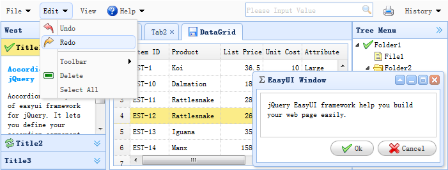
jQuery EasyUI 框架提供了创建网页所需的一切，帮助您轻松建立站点。
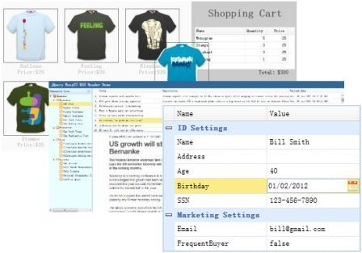
您可以从 http://www.jeasyui.com/download/index.php 上下载您需要的 jQuery EasyUI 版本。
jQuery EasyUI 提供易于使用的组件，它使 Web 开发人员快速地在流行的 jQuery 核心和 HTML5 上建立程序页面。 这些功能使您的应用适合今天的网络。 有两个方法声明的 UI 组件:
1. 直接在 HTML 声明组件。
<div class="easyui-dialog" style="width:400px;height:200px"
data-options="title:'My Dialog',collapsible:true,iconCls:'icon-ok',onOpen:function(){}">
dialog content.
</div>
2. 编写 JavaScript 代码来创建组件。
<input id="cc" style="width:200px" />
$('#cc').combobox({
url: ...,
required: true,
valueField: 'id',
textField: 'text'
});
数据收集并妥善管理数据是网络应用共同的必要。CRUD 允许我们生成页面列表，并编辑数据库记录。本教程将向你演示如何使用 jQuery EasyUI 框架实现一个 CRUD DataGrid。
我们将使用下面的插件：
我们将使用 MySql 数据库来存储用户信息。创建数据库和 'users' 表。
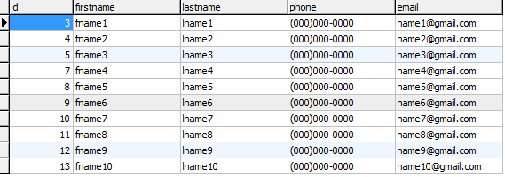
创建没有 javascript 代码的 DataGrid。
<table id="dg" title="My Users" class="easyui-datagrid" style="width:550px;height:250px" url="get_users.php" toolbar="#toolbar" rownumbers="true" fitColumns="true" singleSelect="true"> <thead> <tr> <th field="firstname" width="50">First Name</th> <th field="lastname" width="50">Last Name</th> <th field="phone" width="50">Phone</th> <th field="email" width="50">Email</th> </tr> </thead> </table> <div id="toolbar"> <a href="#" class="easyui-linkbutton" iconCls="icon-add" plain="true" onclick="newUser()">New User</a> <a href="#" class="easyui-linkbutton" iconCls="icon-edit" plain="true" onclick="editUser()">Edit User</a> <a href="#" class="easyui-linkbutton" iconCls="icon-remove" plain="true" onclick="destroyUser()">Remove User</a> </div>
我们不需要写任何的 javascript 代码，就能向用户显示列表，如下图所示：
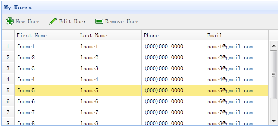
DataGrid 使用 'url' 属性，并赋值为 'get_users.php'，用来从服务器检索数据。
get_users.php 文件的代码
$rs = mysql_query('select * from users');
$result = array();
while($row = mysql_fetch_object($rs)){
array_push($result, $row);
}
echo json_encode($result);
我们使用相同的对话框来创建或编辑用户。
<div id="dlg" class="easyui-dialog" style="width:400px;height:280px;padding:10px 20px"
closed="true" buttons="#dlg-buttons">
<div class="ftitle">User Information</div>
<form id="fm" method="post">
<div class="fitem">
<label>First Name:</label>
<input name="firstname" class="easyui-validatebox" required="true">
</div>
<div class="fitem">
<label>Last Name:</label>
<input name="lastname" class="easyui-validatebox" required="true">
</div>
<div class="fitem">
<label>Phone:</label>
<input name="phone">
</div>
<div class="fitem">
<label>Email:</label>
<input name="email" class="easyui-validatebox" validType="email">
</div>
</form>
</div>
<div id="dlg-buttons">
<a href="#" class="easyui-linkbutton" iconCls="icon-ok" onclick="saveUser()">Save</a>
<a href="#" class="easyui-linkbutton" iconCls="icon-cancel" onclick="javascript:$('#dlg').dialog('close')">Cancel</a>
</div>
这个对话框已经创建，也没有任何的 javascript 代码:。
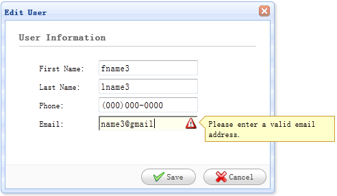
当创建用户时，打开一个对话框并清空表单数据。
function newUser(){
$('#dlg').dialog('open').dialog('setTitle','New User');
$('#fm').form('clear');
url = 'save_user.php';
}
当编辑用户时，打开一个对话框并从 datagrid 选择的行中加载表单数据。
var row = $('#dg').datagrid('getSelected');
if (row){
$('#dlg').dialog('open').dialog('setTitle','Edit User');
$('#fm').form('load',row);
url = 'update_user.php?id='+row.id;
}
'url' 存储着当保存用户数据时表单回传的 URL 地址。
我们使用下面的代码保存用户数据：
function saveUser(){
$('#fm').form('submit',{
url: url,
onSubmit: function(){
return $(this).form('validate');
},
success: function(result){
var result = eval('('+result+')');
if (result.errorMsg){
$.messager.show({
title: 'Error',
msg: result.errorMsg
});
} else {
$('#dlg').dialog('close'); // close the dialog
$('#dg').datagrid('reload'); // reload the user data
}
}
});
}
提交表单之前，'onSubmit' 函数将被调用，该函数用来验证表单字段值。当表单字段值提交成功，关闭对话框并重新加载 datagrid 数据。
我们使用下面的代码来移除一个用户：
function destroyUser(){
var row = $('#dg').datagrid('getSelected');
if (row){
$.messager.confirm('Confirm','Are you sure you want to destroy this user?',function(r){
if (r){
$.post('destroy_user.php',{id:row.id},function(result){
if (result.success){
$('#dg').datagrid('reload'); // reload the user data
} else {
$.messager.show({ // show error message
title: 'Error',
msg: result.errorMsg
});
}
},'json');
}
});
}
}
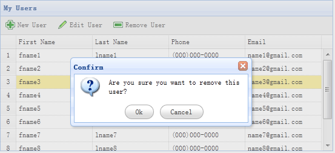
移除一行之前,我们将显示一个确认对话框让用户决定是否真的移除该行数据。当移除数据成功之后，调用 'reload' 方法来刷新 datagrid 数据。
开启 MySQL，在浏览器运行代码。
在上一章节中，我们使用对话框（dialog）组件创建了 CRUD 应用来创建和编辑用户信息。本教程我们将告诉您如何创建一个 CRUD 数据网格（DataGrid）。 我们将使用 可编辑的数据网格（DataGrid）插件 来完成这些 CRUD 操作动作。
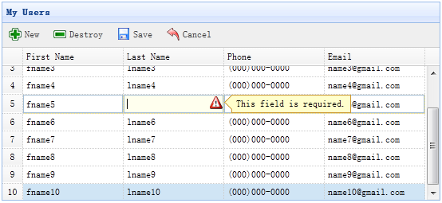
<table id="dg" title="My Users" style="width:550px;height:250px"
toolbar="#toolbar" idField="id"
rownumbers="true" fitColumns="true" singleSelect="true">
<thead>
<tr>
<th field="firstname" width="50" editor="{type:'validatebox',options:{required:true}}">First Name</th>
<th field="lastname" width="50" editor="{type:'validatebox',options:{required:true}}">Last Name</th>
<th field="phone" width="50" editor="text">Phone</th>
<th field="email" width="50" editor="{type:'validatebox',options:{validType:'email'}}">Email</th>
</tr>
</thead>
</table>
<div id="toolbar">
<a href="#" class="easyui-linkbutton" iconCls="icon-add" plain="true" onclick="javascript:$('#dg').edatagrid('addRow')">New</a>
<a href="#" class="easyui-linkbutton" iconCls="icon-remove" plain="true" onclick="javascript:$('#dg').edatagrid('destroyRow')">Destroy</a>
<a href="#" class="easyui-linkbutton" iconCls="icon-save" plain="true" onclick="javascript:$('#dg').edatagrid('saveRow')">Save</a>
<a href="#" class="easyui-linkbutton" iconCls="icon-undo" plain="true" onclick="javascript:$('#dg').edatagrid('cancelRow')">Cancel</a>
</div>
$('#dg').edatagrid({
url: 'get_users.php',
saveUrl: 'save_user.php',
updateUrl: 'update_user.php',
destroyUrl: 'destroy_user.php'
});
我们应该提供 'url'、'saveUrl'、'updateUrl' 和 'destroyUrl' 属性来编辑数据网格（DataGrid）：
保存一个新的用户（save_user.php）：
$firstname = $_REQUEST['firstname'];
$lastname = $_REQUEST['lastname'];
$phone = $_REQUEST['phone'];
$email = $_REQUEST['email'];
include 'conn.php';
$sql = "insert into users(firstname,lastname,phone,email) values('$firstname','$lastname','$phone','$email')";
@mysql_query($sql);
echo json_encode(array(
'id' => mysql_insert_id(),
'firstname' => $firstname,
'lastname' => $lastname,
'phone' => $phone,
'email' => $email
));
更新一个已存在用户（update_user.php）：
$id = intval($_REQUEST['id']); $firstname = $_REQUEST['firstname']; $lastname = $_REQUEST['lastname']; $phone = $_REQUEST['phone']; $email = $_REQUEST['email']; include 'conn.php'; $sql="update users set firstname='$firstname',lastname='$lastname',phone='$phone',email='$email' where id=$id"; @mysql_query($sql); echo json_encode(array( 'id' => $id, 'firstname' => $firstname, 'lastname' => $lastname, 'phone' => $phone, 'email' => $email ));
删除一个已存在用户（destroy_user.php）：
$id = intval($_REQUEST['id']);
include 'conn.php';
$sql = "delete from users where id=$id";
@mysql_query($sql);
echo json_encode(array('success'=>true));
当切换数据网格视图（datagrid view）到 'detailview'，用户可以展开一行来显示一些行的明细在行下面。这个功能允许您为防止在明细行面板（panel）中的编辑表单（form）提供一些合适的布局（layout）。在本教程中，我们使用数据网格（datagrid）组件来减小编辑表单（form）所占据空间。
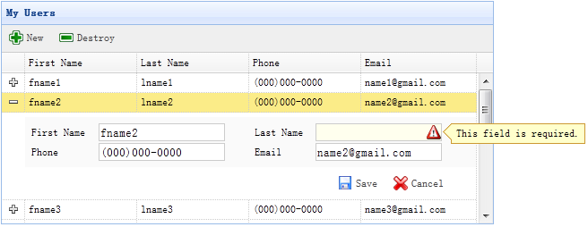
<table id="dg" title="My Users" style="width:550px;height:250px" url="get_users.php" toolbar="#toolbar" fitColumns="true" singleSelect="true"> <thead> <tr> <th field="firstname" width="50">First Name</th> <th field="lastname" width="50">Last Name</th> <th field="phone" width="50">Phone</th> <th field="email" width="50">Email</th> </tr> </thead> </table> <div id="toolbar"> <a href="#" class="easyui-linkbutton" iconCls="icon-add" plain="true" onclick="newItem()">New</a> <a href="#" class="easyui-linkbutton" iconCls="icon-remove" plain="true" onclick="destroyItem()">Destroy</a> </div>
$('#dg').datagrid({
view: detailview,
detailFormatter:function(index,row){
return '<div class="ddv"></div>';
},
onExpandRow: function(index,row){
var ddv = $(this).datagrid('getRowDetail',index).find('div.ddv');
ddv.panel({
border:false,
cache:true,
href:'show_form.php?index='+index,
onLoad:function(){
$('#dg').datagrid('fixDetailRowHeight',index);
$('#dg').datagrid('selectRow',index);
$('#dg').datagrid('getRowDetail',index).find('form').form('load',row);
}
});
$('#dg').datagrid('fixDetailRowHeight',index);
}
});
为了为数据网格（DataGrid）应用明细视图，在 html 页面头部引入 'datagrid-detailview.js' 文件。
我们使用 'detailFormatter' 函数来生成行明细内容。
在这种情况下，我们返回一个用于放置编辑表单（form）的空的 <div>。
当用户点击行展开按钮（'+'）时，'onExpandRow' 事件将被触发，我们将通过 ajax 加载编辑表单（form）。
调用 'getRowDetail' 方法来得到行明细容器，所以我们能查找到行明细面板（panel）。
在行明细中创建面板（panel），加载从 'show_form.php' 返回的编辑表单（form）。
编辑表单（form）是从服务器加载的。
show_form.php<form method="post"> <table class="dv-table" style="width:100%;background:#fafafa;padding:5px;margin-top:5px;"> <tr> <td>First Name</td> <td><input name="firstname" class="easyui-validatebox" required="true"></input></td> <td>Last Name</td> <td><input name="lastname" class="easyui-validatebox" required="true"></input></td> </tr> <tr> <td>Phone</td> <td><input name="phone"></input></td> <td>Email</td> <td><input name="email" class="easyui-validatebox" validType="email"></input></td> </tr> </table> <div style="padding:5px 0;text-align:right;padding-right:30px"> <a href="#" class="easyui-linkbutton" iconCls="icon-save" plain="true" onclick="saveItem(<?php echo $_REQUEST['index'];?>)">Save</a> <a href="#" class="easyui-linkbutton" iconCls="icon-cancel" plain="true" onclick="cancelItem(<?php echo $_REQUEST['index'];?>)">Cancel</a> </div> </form>
调用 'saveItem' 函数来保存一个用户或者调用 'cancelItem' 函数来取消编辑。
function saveItem(index){
var row = $('#dg').datagrid('getRows')[index];
var url = row.isNewRecord ? 'save_user.php' : 'update_user.php?id='+row.id;
$('#dg').datagrid('getRowDetail',index).find('form').form('submit',{
url: url,
onSubmit: function(){
return $(this).form('validate');
},
success: function(data){
data = eval('('+data+')');
data.isNewRecord = false;
$('#dg').datagrid('collapseRow',index);
$('#dg').datagrid('updateRow',{
index: index,
row: data
});
}
});
}
决定要回传哪一个 URL，然后查找表单（form）对象，并调用 'submit' 方法来提交表单（form）数据。当保存数据成功时，折叠并更新行数据。
function cancelItem(index){
var row = $('#dg').datagrid('getRows')[index];
if (row.isNewRecord){
$('#dg').datagrid('deleteRow',index);
} else {
$('#dg').datagrid('collapseRow',index);
}
}
当取消编辑动作时，如果该行是新行而且还没有保存，直接删除该行，否则折叠该行。
在本教程中，我们将通过 jQuery EasyUI 框架创建一个 RSS 阅读器。
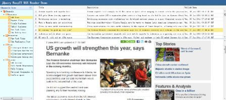
我们将使用以下插件:
<body class="easyui-layout"> <div region="north" border="false" class="rtitle"> jQuery EasyUI RSS Reader Demo </div> <div region="west" title="Channels Tree" split="true" border="false" style="width:200px;background:#EAFDFF;"> <ul id="t-channels" url="data/channels.json"></ul> </div> <div region="center" border="false"> <div class="easyui-layout" fit="true"> <div region="north" split="true" border="false" style="height:200px"> <table id="dg" url="get_feed.php" border="false" rownumbers="true" fit="true" fitColumns="true" singleSelect="true"> <thead> <tr> <th field="title" width="100">Title</th> <th field="description" width="200">Description</th> <th field="pubdate" width="80">Publish Date</th> </tr> </thead> </table> </div> <div region="center" border="false" style="overflow:hidden"> <iframe id="cc" scrolling="auto" frameborder="0" style="width:100%;height:100%"></iframe> </div> </div> </div> </body>
在这里我们要处理一些由用户触发的事件。
$('#dg').datagrid({
onSelect: function(index,row){
$('#cc').attr('src', row.link);
},
onLoadSuccess:function(){
var rows = $(this).datagrid('getRows');
if (rows.length){
$(this).datagrid('selectRow',0);
}
}
});
本实例使用 'onSelect' 事件来显示 feed 的内容，使用 'onLoadSuccess' 事件来选择第一行。
当树形菜单（Tree）数据已经加载，我们需要选择第一个叶子节点，调用 'select' 方法来选择该节点。 使用 'onSelect' 事件来得到已选择的节点，这样我们就能得到对应的 'url' 值。 最后我们调用数据网格（DataGrid） 的 'load' 方法来刷新 feed 列表数据。
$('#t-channels').tree({
onSelect: function(node){
var url = node.attributes.url;
$('#dg').datagrid('load',{
url: url
});
},
onLoadSuccess:function(node,data){
if (data.length){
var id = data[0].children[0].children[0].id;
var n = $(this).tree('find', id);
$(this).tree('select', n.target);
}
}
});
本教程向您展示如何使 HTML 元素可拖动，在本例中，我们将创建三个 DIV 元素然后启用他们的拖动和放置。
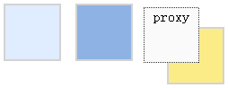
首先，我们创建三个 <div> 元素：
<div id="dd1" class="dd-demo"></div> <div id="dd2" class="dd-demo"></div> <div id="dd3" class="dd-demo"></div>
对于第一个 <div> 元素，我们通过默认值让其可以拖动。
$('#dd1').draggable();
对于第二个 <div> 元素，我们通过创建一个克隆（clone）了原来元素的代理（proxy）让其可以拖动。
$('#dd2').draggable({
proxy:'clone'
});
对于第三个 <div> 元素，我们通过创建自定义代理（proxy）让其可以拖动。
$('#dd3').draggable({
proxy:function(source){
var p = $('<div class="proxy">proxy</div>');
p.appendTo('body');
return p;
}
});
如果您能够通过您的 Web 应用简单地实现拖动和放置，您就会知道一些特别的东西。通过 jQuery EasyUI，我们在 Web 应用中可以简单地实现拖放功能。
在本教程中，我们将向您展示如何创建一个启用用户拖动和放置用户想买的商品的购物车页面。购物篮中的物品和价格将更新。
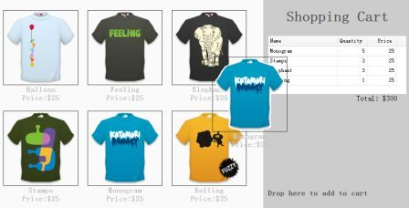
<ul class="products"> <li> <a href="#" class="item"> <img src="images/shirt1.gif"/> <div> <p>Balloon</p> <p>Price:$25</p> </div> </a> </li> <li> <a href="#" class="item"> <img src="images/shirt2.gif"/> <div> <p>Feeling</p> <p>Price:$25</p> </div> </a> </li> <!-- other products --> </ul>
正如您所看到的上面的代码，我们添加一个包含一些 <li> 元素的 <ul> 元素来显示商品。所有商品都有名字和价格属性，它们包含在 <p> 元素中。
<div class="cart"> <h1>Shopping Cart</h1> <table id="cartcontent" style="width:300px;height:auto;"> <thead> <tr> <th field="name" width=140>Name</th> <th field="quantity" width=60 align="right">Quantity</th> <th field="price" width=60 align="right">Price</th> </tr> </thead> </table> <p class="total">Total: $0</p> <h2>Drop here to add to cart</h2> </div>
我们使用数据网格（datagrid）来显示购物篮中的物品。
$('.item').draggable({
revert:true,
proxy:'clone',
onStartDrag:function(){
$(this).draggable('options').cursor = 'not-allowed';
$(this).draggable('proxy').css('z-index',10);
},
onStopDrag:function(){
$(this).draggable('options').cursor='move';
}
});
请注意，我们把 draggable 属性的值从 'proxy' 设置为 'clone'，所以拖动元素将由克隆产生。
$('.cart').droppable({
onDragEnter:function(e,source){
$(source).draggable('options').cursor='auto';
},
onDragLeave:function(e,source){
$(source).draggable('options').cursor='not-allowed';
},
onDrop:function(e,source){
var name = $(source).find('p:eq(0)').html();
var price = $(source).find('p:eq(1)').html();
addProduct(name, parseFloat(price.split('$')[1]));
}
});
var data = {"total":0,"rows":[]};
var totalCost = 0;
function addProduct(name,price){
function add(){
for(var i=0; i<data.total; i++){
var row = data.rows[i];
if (row.name == name){
row.quantity += 1;
return;
}
}
data.total += 1;
data.rows.push({
name:name,
quantity:1,
price:price
});
}
add();
totalCost += price;
$('#cartcontent').datagrid('loadData', data);
$('div.cart .total').html('Total: $'+totalCost);
}
每当放置商品的时候，我们首先得到商品名称和价格，然后调用 'addProduct' 函数来更新购物篮。
本教程将向您展示如何使用 jQuery EasyUI 创建一个学校课程表。 我们将创建两个表格：在左侧显示学校科目，在右侧显示时间表。 您可以拖动学校科目并放置到时间表单元格上。 学校科目是一个 <div class="item"> 元素，时间表单元格是一个 <td class="drop"> 元素。
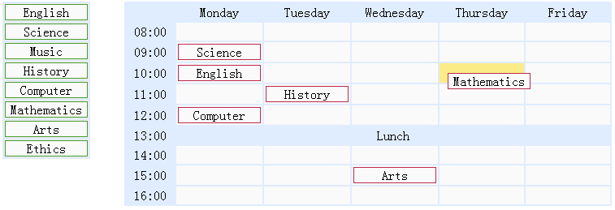
<div class="left"> <table> <tr> <td><div class="item">English</div></td> </tr> <tr> <td><div class="item">Science</div></td> </tr> <!-- other subjects --> </table> </div>
<div class="right"> <table> <tr> <td class="blank"></td> <td class="title">Monday</td> <td class="title">Tuesday</td> <td class="title">Wednesday</td> <td class="title">Thursday</td> <td class="title">Friday</td> </tr> <tr> <td class="time">08:00</td> <td class="drop"></td> <td class="drop"></td> <td class="drop"></td> <td class="drop"></td> <td class="drop"></td> </tr> <!-- other cells --> </table> </div>
$('.left .item').draggable({
revert:true,
proxy:'clone'
});
$('.right td.drop').droppable({
onDragEnter:function(){
$(this).addClass('over');
},
onDragLeave:function(){
$(this).removeClass('over');
},
onDrop:function(e,source){
$(this).removeClass('over');
if ($(source).hasClass('assigned')){
$(this).append(source);
} else {
var c = $(source).clone().addClass('assigned');
$(this).empty().append(c);
c.draggable({
revert:true
});
}
}
});
正如您所看到的上面的代码，当用户拖动在左侧的学校科目并放置到时间表单元格中时，onDrop 回调函数将被调用。我们克隆从左侧拖动的源元素并把它附加到时间表单元格上。 当把学校科目从时间表的某个单元格拖动到其他单元格，只需简单地移动它即可。
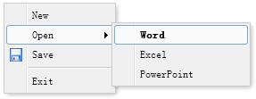
菜单（Menu）定义在一些 DIV 标记中，如下所示：
<div id="mm" class="easyui-menu" style="width:120px;">
<div onclick="javascript:alert('new')">New</div>
<div>
<span>Open</span>
<div style="width:150px;">
<div><b>Word</b></div>
<div>Excel</div>
<div>PowerPoint</div>
</div>
</div>
<div icon="icon-save">Save</div>
<div class="menu-sep"></div>
<div>Exit</div>
</div>
当菜单创建之后是不显示的，调用 'show' 方法显示它或者调用 'hide' 方法隐藏它：
$('#mm').menu('show', {
left: 200,
top: 100
});
通常情况下，使用 <button> 元素来创建按钮，而链接按钮（Link Button）则是使用 <a> 元素来创建的。所以实际上一个链接按钮（Link Button）就是一个显示为按钮样式的 <a> 元素。
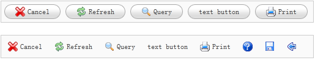
为了创建链接按钮（Link Button），所有您需要做的就是添加一个名为 'easyui-linkbutton' 的 class 属性到 <a> 元素：
<div style="padding:5px;background:#fafafa;width:500px;border:1px solid #ccc"> <a href="#" class="easyui-linkbutton" iconCls="icon-cancel">Cancel</a> <a href="#" class="easyui-linkbutton" iconCls="icon-reload">Refresh</a> <a href="#" class="easyui-linkbutton" iconCls="icon-search">Query</a> <a href="#" class="easyui-linkbutton">text button</a> <a href="#" class="easyui-linkbutton" iconCls="icon-print">Print</a> </div> <div style="padding:5px;background:#fafafa;width:500px;border:1px solid #ccc"> <a href="#" class="easyui-linkbutton" plain="true" iconCls="icon-cancel">Cancel</a> <a href="#" class="easyui-linkbutton" plain="true" iconCls="icon-reload">Refresh</a> <a href="#" class="easyui-linkbutton" plain="true" iconCls="icon-search">Query</a> <a href="#" class="easyui-linkbutton" plain="true">text button</a> <a href="#" class="easyui-linkbutton" plain="true" iconCls="icon-print">Print</a> <a href="#" class="easyui-linkbutton" plain="true" iconCls="icon-help"></a> <a href="#" class="easyui-linkbutton" plain="true" iconCls="icon-save"></a> <a href="#" class="easyui-linkbutton" plain="true" iconCls="icon-back"></a> </div>
正如您所看到的，iconCls 属性是一个 icon 的 CSS class 样式，它在按钮上显示一个 icon 图片。
有时候您需要禁用链接按钮（Link Button）或者启用它，下面的代码演示了如何禁用一个链接按钮（Link Button）：
$(selector).linkbutton('disable'); // call the 'disable' method
菜单按钮（Menu Button）包含一个按钮（button）和一个菜单（menu）组件，当点击或移动鼠标到按钮上，将显示一个对应的菜单。
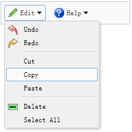
为了定义一个菜单按钮（Menu Button），您应该定义一个链接按钮（Link Button）和一个菜单（menu），下面是一个实例：
<div style="background:#fafafa;padding:5px;width:200px;border:1px solid #ccc"> <a href="#" class="easyui-menubutton" menu="#mm1" iconCls="icon-edit">Edit</a> <a href="#" class="easyui-menubutton" menu="#mm2" iconCls="icon-help">Help</a> </div> <div id="mm1" style="width:150px;"> <div iconCls="icon-undo">Undo</div> <div iconCls="icon-redo">Redo</div> <div class="menu-sep"></div> <div>Cut</div> <div>Copy</div> <div>Paste</div> <div class="menu-sep"></div> <div iconCls="icon-remove">Delete</div> <div>Select All</div> </div> <div id="mm2" style="width:100px;"> <div>Help</div> <div>Update</div> <div>About</div> </div>
现在已经定义好了一个菜单按钮（Menu Button），您不需要写任何的 javascript 代码。
分割按钮（Split Button）包含一个链接按钮（Link Button）和一个菜单（Menu）。当用户点击或者鼠标悬停在向下箭头区域，将会显示一个对应的菜单。本实例演示了如何创建和使用分割按钮（Split Button）。
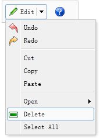
我们创建一个分割按钮（Split Button）和一个链接按钮（Link Button）：
<div style="border:1px solid #ccc;background:#fafafa;padding:5px;width:120px;"> <a href="#" class="easyui-splitbutton" menu="#mm" iconCls="icon-edit">Edit</a> <a href="#" class="easyui-linkbutton" plain="true" iconCls="icon-help"></a> </div> <div id="mm" style="width:150px;"> <div iconCls="icon-undo">Undo</div> <div iconCls="icon-redo">Redo</div> <div class="menu-sep"></div> <div>Cut</div> <div>Copy</div> <div>Paste</div> <div class="menu-sep"></div> <div> <span>Open</span> <div style="width:150px;"> <div>Firefox</div> <div>Internet Explorer</div> <div class="menu-sep"></div> <div>Select Program...</div> </div> </div> <div iconCls="icon-remove">Delete</div> <div>Select All</div> </div>
现在已经定义好了一个分割按钮（Split Button），您不需要写任何的 javascript 代码。
边框布局（border layout）提供五个区域：east、west、north、south、center。以下是一些通常用法：
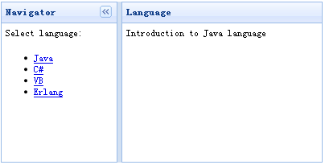
为了应用布局（layout），您应该确定一个布局（layout）容器，然后定义一些区域。布局（layout）必须至少需要一个 center 区域，以下是一个布局（layout）实例：
<div class="easyui-layout" style="width:400px;height:200px;">
<div region="west" split="true" title="Navigator" style="width:150px;">
<p style="padding:5px;margin:0;">Select language:</p>
<ul>
<li><a href="javascript:void(0)" onclick="showcontent('java')">Java</a></li>
<li><a href="javascript:void(0)" onclick="showcontent('cshape')">C#</a></li>
<li><a href="javascript:void(0)" onclick="showcontent('vb')">VB</a></li>
<li><a href="javascript:void(0)" onclick="showcontent('erlang')">Erlang</a></li>
</ul>
</div>
<div id="content" region="center" title="Language" style="padding:5px;">
</div>
</div>
我们在一个 <div> 容器中创建了一个边框布局（border layout），布局（layout）把容器切割为两个部分，左边是导航菜单，右边是主要内容。
最后我们写一个 onclick 事件处理函数来检索数据，'showcontent' 函数非常简单：
function showcontent(language){
$('#content').html('Introduction to ' + language + ' language');
}
面板（Panel）允许您创建用于多种用途的自定义布局。在本实例中，我们使用面板（panel）和布局（layout）插件来创建一个 msn 消息框。
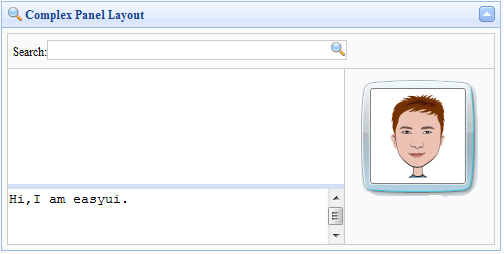
我们在区域面板中使用多个布局（layout）。在消息框的顶部我们放置一个查询输入框，同时在右边放置一个人物图片。在中间的区域我们通过设置 split 属性为 true，把这部分切割为两部分，允许用户改变区域面板的尺寸大小。
以下就是所有代码：
<div class="easyui-panel" title="Complex Panel Layout" iconCls="icon-search" collapsible="true" style="padding:5px;width:500px;height:250px;"> <div class="easyui-layout" fit="true"> <div region="north" border="false" class="p-search"> <label>Search:</label><input></input> </div> <div region="center" border="false"> <div class="easyui-layout" fit="true"> <div region="east" border="false" class="p-right"> <img src="images/msn.gif"/> </div> <div region="center" border="false" style="border:1px solid #ccc;"> <div class="easyui-layout" fit="true"> <div region="south" split="true" border="false" style="height:60px;"> <textarea style="border:0;width:100%;height:100%;resize:none">Hi,I am easyui.</textarea> </div> <div region="center" border="false"> </div> </div> </div> </div> </div> </div> </div>
我们不需要写任何的 javascript 代码，它自己有非常强大的设计用户界面的功能。
在本教程中，您将会学习到关于 easyui 折叠面板（Accordion）的知识。 折叠面板（Accordion）包含一系列的面板（panel）。 所有面板（panel）的头部（header）都是可见的，但是一次仅仅显示一个面板（panel）的 body 内容。 当用户点击面板（panel）的头部（header）时，该面板（panel）的 body 内容将可见，同时其他面板（panel）的 body 内容将隐藏不可见。
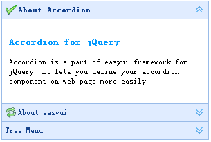
我们将创建三个面板（panel），第三个面板（panel）包含一个树形菜单。
<div class="easyui-accordion" style="width:300px;height:200px;"> <div title="About Accordion" iconCls="icon-ok" style="overflow:auto;padding:10px;"> <h3 style="color:#0099FF;">Accordion for jQuery</h3> <p>Accordion is a part of easyui framework for jQuery. It lets you define your accordion component on web page more easily.</p> </div> <div title="About easyui" iconCls="icon-reload" selected="true" style="padding:10px;"> easyui help you build your web page easily </div> <div title="Tree Menu"> <ul id="tt1" class="easyui-tree"> <li> <span>Folder1</span> <ul> <li> <span>Sub Folder 1</span> <ul> <li><span>File 11</span></li> <li><span>File 12</span></li> <li><span>File 13</span></li> </ul> </li> <li><span>File 2</span></li> <li><span>File 3</span></li> </ul> </li> <li><span>File2</span></li> </ul> </div> </div>
本教程将向您演示如何使用 easyui 创建一个 Tabs 组件。 Tabs 有多个可以动态地添加或移除的面板（panel）。 您可以使用 Tabs 来在相同的页面上显示不同的实体。
Tabs 一次仅仅显示一个面板（panel），每个面板（panel）都有标题、图标和关闭按钮。 当 Tabs 被选中时，将显示对应的面板（panel）的内容。
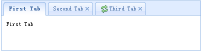
从 HTML 标记创建 Tabs，包含一个 DIV 容器和一些 DIV 面板（panel）。
<div class="easyui-tabs" style="width:400px;height:100px;"> <div title="First Tab" style="padding:10px;"> First Tab </div> <div title="Second Tab" closable="true" style="padding:10px;"> Second Tab </div> <div title="Third Tab" iconCls="icon-reload" closable="true" style="padding:10px;"> Third Tab </div> </div>
我们创建一个带有三个面板（panel）的 Tabs 组件，第二个和第三个面板（panel）可以通过点击关闭按钮进行关闭。
通过使用 jQuery EasyUI 可以很容易地添加 Tabs。您只需要调用 'add' 方法即可。
在本教程中，我们将使用 iframe 动态地添加显示在一个页面上的 Tabs。 当点击添加按钮，一个新的 tab 将被添加。如果 tab 已经存在，它将被激活。
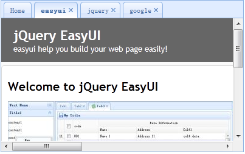
<div style="margin-bottom:10px">
<a href="#" class="easyui-linkbutton" onclick="addTab('google','http://www.google.com')">google</a>
<a href="#" class="easyui-linkbutton" onclick="addTab('jquery','http://jquery.com/')">jquery</a>
<a href="#" class="easyui-linkbutton" onclick="addTab('easyui','http://jeasyui.com/')">easyui</a>
</div>
<div id="tt" class="easyui-tabs" style="width:400px;height:250px;">
<div title="Home">
</div>
</div>
这个 html 代码非常简单,我们创建了带有一个名为 'Home' 的 tab 面板的 Tabs。请注意，我们不需要写任何的 js 代码。
function addTab(title, url){
if ($('#tt').tabs('exists', title)){
$('#tt').tabs('select', title);
} else {
var content = '<iframe scrolling="auto" frameborder="0" src="'+url+'" style="width:100%;height:100%;"></iframe>';
$('#tt').tabs('add',{
title:title,
content:content,
closable:true
});
}
}
我们使用 'exists' 方法来判断 tab 是否已经存在，如果已存在则激活 tab。如果不存在则调用 'add' 方法来添加一个新的 tab 面板。
本教程将向您展示如何创建一个自动播放的 Tabs。 Tabs 组件显示第一个 tab 面板，然后显示第二个、第三个... 我们将写一些代码来自动地切换 tab 面板，然后让它循环。
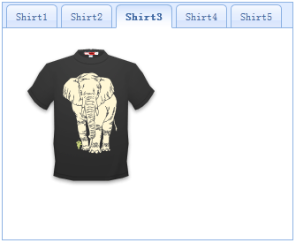
<div id="tt" class="easyui-tabs" style="width:330px;height:270px;"> <div title="Shirt1" style="padding:20px;"> <img src="images/shirt1.gif"> </div> <div title="Shirt2" style="padding:20px;"> <img src="images/shirt2.gif"> </div> <div title="Shirt3" style="padding:20px;"> <img src="images/shirt3.gif"> </div> <div title="Shirt4" style="padding:20px;"> <img src="images/shirt4.gif"> </div> <div title="Shirt5" style="padding:20px;"> <img src="images/shirt5.gif"> </div> </div>
var index = 0;
var t = $('#tt');
var tabs = t.tabs('tabs');
setInterval(function(){
t.tabs('select', tabs[index].panel('options').title);
index++;
if (index >= tabs.length){
index = 0;
}
}, 3000);
正如您所看到的，我们调用 'tabs' 方法来得到所有 tab 面板，并使用 'setInterval' 函数来切换他们。
通常情况下，在 Windows XP 的资源管理器文件夹中，左侧的面板（panel）包含一些常见任务。 本教程向您展示如何通过 easyui 的面板（panel）插件来创建 XP 左侧面板。
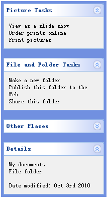
我们定义一些面板（panel），这些面板（panel）用来显示一些任务。每个面板（panel）应该至少有折叠/展开工具按钮。
代码如下所示：
<div style="width:200px;height:auto;background:#7190E0;padding:5px;"> <div class="easyui-panel" title="Picture Tasks" collapsible="true" style="width:200px;height:auto;padding:10px;"> View as a slide show<br/> Order prints online<br/> Print pictures </div> <br/> <div class="easyui-panel" title="File and Folder Tasks" collapsible="true" style="width:200px;height:auto;padding:10px;"> Make a new folder<br/> Publish this folder to the Web<br/> Share this folder </div> <br/> <div class="easyui-panel" title="Other Places" collapsible="true" collapsed="true" style="width:200px;height:auto;padding:10px;"> New York<br/> My Pictures<br/> My Computer<br/> My Network Places </div> <br/> <div class="easyui-panel" title="Details" collapsible="true" style="width:200px;height:auto;padding:10px;"> My documents<br/> File folder<br/><br/> Date modified: Oct.3rd 2010 </div> </div>
请注意，这个视图外观效果不是我们想要的，我们必须改变面板（panel）的头部背景图片和折叠/展开按钮的图标。
做到这一点并不难，我们需要做的只是重新定义一些 CSS。
.panel-body{
background:#f0f0f0;
}
.panel-header{
background:#fff url('images/panel_header_bg.gif') no-repeat top right;
}
.panel-tool-collapse{
background:url('images/arrow_up.gif') no-repeat 0px -3px;
}
.panel-tool-expand{
background:url('images/arrow_down.gif') no-repeat 0px -3px;
}
由此可见，使用 easyui 定义用户界面非常简单。
本实例演示如何转换表格（table）为数据网格（datagrid）。
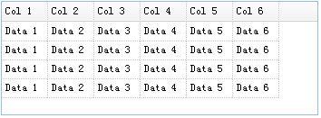
数据网格（datagrid）的列信息是定义在 <thead> 标记中，数据是定义在 <tbody> 标记中。确保为所有的数据列设置 field 名称，请看下面的实例：
<table id="tt" class="easyui-datagrid" style="width:400px;height:auto;"> <thead> <tr> <th field="name1" width="50">Col 1</th> <th field="name2" width="50">Col 2</th> <th field="name3" width="50">Col 3</th> <th field="name4" width="50">Col 4</th> <th field="name5" width="50">Col 5</th> <th field="name6" width="50">Col 6</th> </tr> </thead> <tbody> <tr> <td>Data 1</td> <td>Data 2</td> <td>Data 3</td> <td>Data 4</td> <td>Data 5</td> <td>Data 6</td> </tr> <tr> <td>Data 1</td> <td>Data 2</td> <td>Data 3</td> <td>Data 4</td> <td>Data 5</td> <td>Data 6</td> </tr> <tr> <td>Data 1</td> <td>Data 2</td> <td>Data 3</td> <td>Data 4</td> <td>Data 5</td> <td>Data 6</td> </tr> <tr> <td>Data 1</td> <td>Data 2</td> <td>Data 3</td> <td>Data 4</td> <td>Data 5</td> <td>Data 6</td> </tr> </tbody> </table>
非常棒，您可以定义一个复杂的表头，例如：
<thead> <tr> <th field="name1" width="50" rowspan="2">Col 1</th> <th field="name2" width="50" rowspan="2">Col 2</th> <th field="name3" width="50" rowspan="2">Col 3</th> <th colspan="3">Details</th> </tr> <tr> <th field="name4" width="50">Col 4</th> <th field="name5" width="50">Col 5</th> <th field="name6" width="50">Col 6</th> </tr> </thead>
现在您可以看见，复杂表头已经创建。
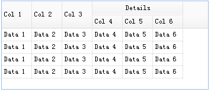
本实例演示如何取得选中行数据。
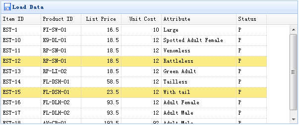
数据网格（datagrid）组件包含两种方法来检索选中行数据：
<table id="tt" class="easyui-datagrid" style="width:600px;height:250px" url="data/datagrid_data.json" title="Load Data" iconCls="icon-save"> <thead> <tr> <th field="itemid" width="80">Item ID</th> <th field="productid" width="80">Product ID</th> <th field="listprice" width="80" align="right">List Price</th> <th field="unitcost" width="80" align="right">Unit Cost</th> <th field="attr1" width="150">Attribute</th> <th field="status" width="60" align="center">Stauts</th> </tr> </thead> </table>
取得选中行数据：
var row = $('#tt').datagrid('getSelected');
if (row){
alert('Item ID:'+row.itemid+"\nPrice:"+row.listprice);
}
取得所有选中行的 itemid：
var ids = [];
var rows = $('#tt').datagrid('getSelections');
for(var i=0; i<rows.length; i++){
ids.push(rows[i].itemid);
}
alert(ids.join('\n'));
本实例演示如何从数据库得到数据，并将它们显示在数据网格（datagrid）中。然后演示如何根据用户输入的搜索关键词搜寻显示结果。
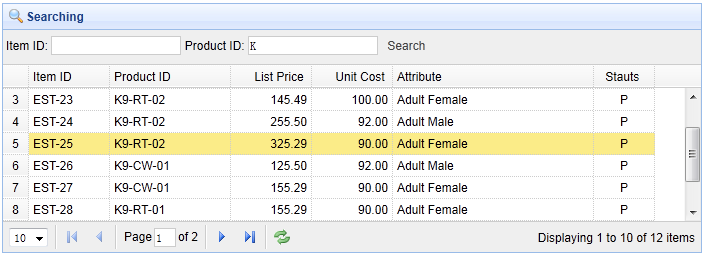
创建带有分页功能的数据网格（datagrid），然后添加工具栏到其中。
<table id="tt" class="easyui-datagrid" style="width:600px;height:250px" url="datagrid24_getdata.php" toolbar="#tb" title="Load Data" iconCls="icon-save" rownumbers="true" pagination="true"> <thead> <tr> <th field="itemid" width="80">Item ID</th> <th field="productid" width="80">Product ID</th> <th field="listprice" width="80" align="right">List Price</th> <th field="unitcost" width="80" align="right">Unit Cost</th> <th field="attr1" width="150">Attribute</th> <th field="status" width="60" align="center">Stauts</th> </tr> </thead> </table>
工具栏定义如下：
<div id="tb" style="padding:3px"> <span>Item ID:</span> <input id="itemid" style="line-height:26px;border:1px solid #ccc"> <span>Product ID:</span> <input id="productid" style="line-height:26px;border:1px solid #ccc"> <a href="#" class="easyui-linkbutton" plain="true" onclick="doSearch()">Search</a> </div>
当用户输入查询值并按下查询按钮时，'doSearch' 函数将被调用：
function doSearch(){
$('#tt').datagrid('load',{
itemid: $('#itemid').val(),
productid: $('#productid').val()
});
}
上面的代码调用了 'load' 方法来加载新的数据网格（datagrid）数据。我们需要传递 'itemid' 和 'productid' 参数到服务器。
include 'conn.php';
$page = isset($_POST['page']) ? intval($_POST['page']) : 1;
$rows = isset($_POST['rows']) ? intval($_POST['rows']) : 10;
$itemid = isset($_POST['itemid']) ? mysql_real_escape_string($_POST['itemid']) : '';
$productid = isset($_POST['productid']) ? mysql_real_escape_string($_POST['productid']) : '';
$offset = ($page-1)*$rows;
$result = array();
$where = "itemid like '$itemid%' and productid like '$productid%'";
$rs = mysql_query("select count(*) from item where " . $where);
$row = mysql_fetch_row($rs);
$result["total"] = $row[0];
$rs = mysql_query("select * from item where " . $where . " limit $offset,$rows");
$items = array();
while($row = mysql_fetch_object($rs)){
array_push($items, $row);
}
$result["rows"] = $items;
echo json_encode($result);
本实例演示如何添加工具栏（toolbar）到数据网格（datagrid）。
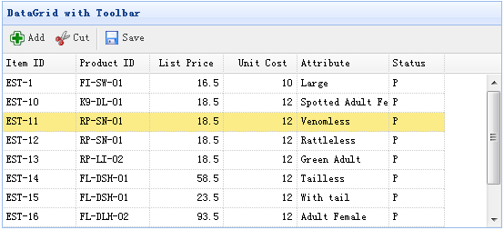
<table id="tt" class="easyui-datagrid" style="width:600px;height:250px"
url="data/datagrid_data.json"
title="DataGrid with Toolbar" iconCls="icon-save"
toolbar="#tb">
<thead>
<tr>
<th field="itemid" width="80">Item ID</th>
<th field="productid" width="80">Product ID</th>
<th field="listprice" width="80" align="right">List Price</th>
<th field="unitcost" width="80" align="right">Unit Cost</th>
<th field="attr1" width="150">Attribute</th>
<th field="status" width="60" align="center">Stauts</th>
</tr>
</thead>
</table>
<div id="tb">
<a href="#" class="easyui-linkbutton" iconCls="icon-add" plain="true" onclick="javascript:alert('Add')">Add</a>
<a href="#" class="easyui-linkbutton" iconCls="icon-cut" plain="true" onclick="javascript:alert('Cut')">Cut</a>
<a href="#" class="easyui-linkbutton" iconCls="icon-save" plain="true" onclick="javascript:alert('Save')">Save</a>
</div>
我们不需要写任何的 javascript 代码，只需通过 'toolbar' 属性附加工具栏（toolbar）到数据网格（datagrid）。
数据网格（datagrid）的工具栏（toolbar）可以包含按钮及其他组件。 您可以通个一个已存在的 DIV 标签来简单地定义工具栏布局，该 DIV 标签将成为数据网格（datagrid）工具栏的内容。 本教程将向您展示如何创建数据网格（datagrid）组件的复杂工具栏。
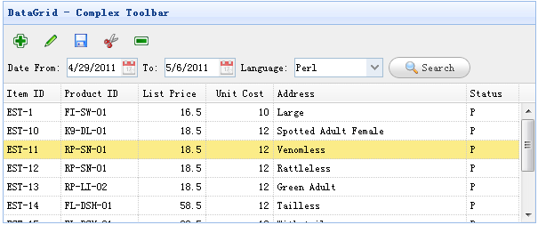
<div id="tb" style="padding:5px;height:auto"> <div style="margin-bottom:5px"> <a href="#" class="easyui-linkbutton" iconCls="icon-add" plain="true"></a> <a href="#" class="easyui-linkbutton" iconCls="icon-edit" plain="true"></a> <a href="#" class="easyui-linkbutton" iconCls="icon-save" plain="true"></a> <a href="#" class="easyui-linkbutton" iconCls="icon-cut" plain="true"></a> <a href="#" class="easyui-linkbutton" iconCls="icon-remove" plain="true"></a> </div> <div> Date From: <input class="easyui-datebox" style="width:80px"> To: <input class="easyui-datebox" style="width:80px"> Language: <input class="easyui-combobox" style="width:100px" url="data/combobox_data.json" valueField="id" textField="text"> <a href="#" class="easyui-linkbutton" iconCls="icon-search">Search</a> </div> </div>
<table class="easyui-datagrid" style="width:600px;height:250px" url="data/datagrid_data.json" title="DataGrid - Complex Toolbar" toolbar="#tb" singleSelect="true" fitColumns="true"> <thead> <tr> <th field="itemid" width="60">Item ID</th> <th field="productid" width="80">Product ID</th> <th field="listprice" align="right" width="70">List Price</th> <th field="unitcost" align="right" width="70">Unit Cost</th> <th field="attr1" width="200">Address</th> <th field="status" width="50">Status</th> </tr> </thead> </table>
正如您所看到的，数据网格（datagrid）的工具栏域对话框（dialog）相似。我们不需要写任何的 javascript 代码，就能创建带有复杂工具栏的数据网格（datagrid）。
本实例演示如何冻结一些列，当用户在网格上移动水平滚动条时，冻结列不能滚动到视图的外部。
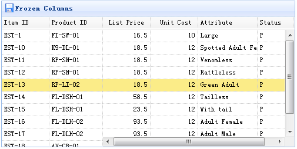
为了冻结列，您需要定义 frozenColumns 属性。frozenColumn 属性和 columns 属性一样。
$('#tt').datagrid({
title:'Frozen Columns',
iconCls:'icon-save',
width:500,
height:250,
url:'data/datagrid_data.json',
frozenColumns:[[
{field:'itemid',title:'Item ID',width:80},
{field:'productid',title:'Product ID',width:80},
]],
columns:[[
{field:'listprice',title:'List Price',width:80,align:'right'},
{field:'unitcost',title:'Unit Cost',width:80,align:'right'},
{field:'attr1',title:'Attribute',width:100},
{field:'status',title:'Status',width:60}
]]
});
您不需要写任何的 javascript 代码，这样您就能创建一个数据网格（datagrid）组件，如下所示：
<table id="tt" title="Frozen Columns" class="easyui-datagrid" style="width:500px;height:250px" url="data/datagrid_data.json" singleSelect="true" iconCls="icon-save"> <thead frozen="true"> <tr> <th field="itemid" width="80">Item ID</th> <th field="productid" width="80">Product ID</th> </tr> </thead> <thead> <tr> <th field="listprice" width="80" align="right">List Price</th> <th field="unitcost" width="80" align="right">Unit Cost</th> <th field="attr1" width="150">Attribute</th> <th field="status" width="60" align="center">Stauts</th> </tr> </thead> </table>
数据网格（DataGrid）列可以使用 'columns' 属性简单地定义。如果您想动态地改变列，那根本没有问题。为了改变列，您可以重新调用datagrid 方法，并传递一个新的 columns 属性。
<table id="tt" title="Frozen Columns" class="easyui-datagrid" style="width:550px;height:250px" url="data/datagrid_data.json" singleSelect="true" iconCls="icon-save"> </table>
$('#tt').datagrid({
columns:[[
{field:'itemid',title:'Item ID',width:80},
{field:'productid',title:'Product ID',width:80},
{field:'attr1',title:'Attribute',width:200},
{field:'status',title:'Status',width:80}
]]
});
运行网页，您将看见：
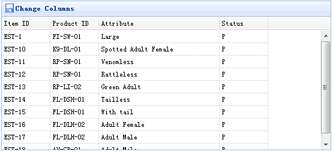
可是有时候您想改变列，所以您需要写一些代码：
$('#tt').datagrid({
columns:[[
{field:'itemid',title:'Item ID',width:80},
{field:'productid',title:'Product ID',width:80},
{field:'listprice',title:'List Price',width:80,align:'right'},
{field:'unitcost',title:'Unit Cost',width:80,align:'right'},
{field:'attr1',title:'Attribute',width:100},
{field:'status',title:'Status',width:60}
]]
});
请记住，我们已经定义了其他属性，比如：url、width、height 等等。我们不需要再一次定义它们，我们定义那些我们需要改变的。
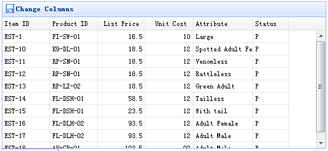
以下实例格式化在 easyui DataGrid 里的列数据，并使用自定义列的 formatter，如果价格小于 20 就将文本变为红色。
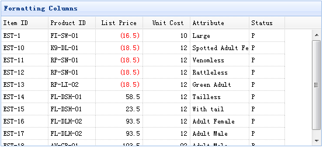
为了格式化一个数据网格（DataGrid）列，我们需要设置 formatter 属性，它是一个函数。这个格式化函数包含三个参数：
<table id="tt" title="Formatting Columns" class="easyui-datagrid" style="width:550px;height:250px" url="data/datagrid_data.json" singleSelect="true" iconCls="icon-save"> <thead> <tr> <th field="itemid" width="80">Item ID</th> <th field="productid" width="80">Product ID</th> <th field="listprice" width="80" align="right" formatter="formatPrice">List Price</th> <th field="unitcost" width="80" align="right">Unit Cost</th> <th field="attr1" width="100">Attribute</th> <th field="status" width="60" align="center">Stauts</th> </tr> </thead> </table>
请注意，'listprice' 字段有一个 'formatter' 属性，用来指明格式化函数。
function formatPrice(val,row){
if (val < 20){
return '<span style="color:red;">('+val+')</span>';
} else {
return val;
}
}
本实例演示如何通过点击列表头来排序数据网格（DataGrid）。
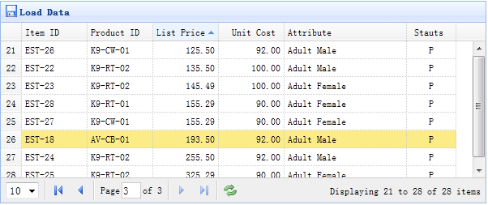
数据网格（DataGrid）的所有列可以通过点击列表头来排序。您可以定义哪列可以排序。默认的，列是不能排序的，除非您设置 sortable 属性为 true。
<table id="tt" class="easyui-datagrid" style="width:600px;height:250px" url="datagrid8_getdata.php" title="Load Data" iconCls="icon-save" rownumbers="true" pagination="true"> <thead> <tr> <th field="itemid" width="80" sortable="true">Item ID</th> <th field="productid" width="80" sortable="true">Product ID</th> <th field="listprice" width="80" align="right" sortable="true">List Price</th> <th field="unitcost" width="80" align="right" sortable="true">Unit Cost</th> <th field="attr1" width="150">Attribute</th> <th field="status" width="60" align="center">Stauts</th> </tr> </thead> </table>
我们定义一些可排序的列，包含 itemid、productid、listprice、unitcost 等等。'attr1' 列和 'status' 列不能排序。
当排序时，数据网格（DataGrid）将发送两个参数到远程服务器：
$page = isset($_POST['page']) ? intval($_POST['page']) : 1;
$rows = isset($_POST['rows']) ? intval($_POST['rows']) : 10;
$sort = isset($_POST['sort']) ? strval($_POST['sort']) : 'itemid';
$order = isset($_POST['order']) ? strval($_POST['order']) : 'asc';
$offset = ($page-1)*$rows;
$result = array();
include 'conn.php';
$rs = mysql_query("select count(*) from item");
$row = mysql_fetch_row($rs);
$result["total"] = $row[0];
$rs = mysql_query("select * from item order by $sort $order limit $offset,$rows");
$items = array();
while($row = mysql_fetch_object($rs)){
array_push($items, $row);
}
$result["rows"] = $items;
echo json_encode($result);
如果默认的排序行为不满足您的需求，您可以自定义数据网格（datagrid）的排序行为。
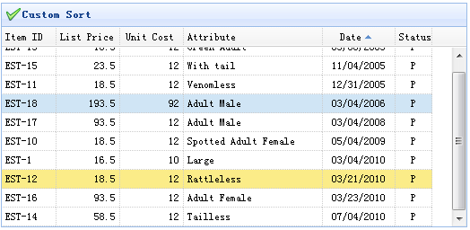
最基础的，用户可以在列上定义一个排序函数，函数名是 sorter。这个函数将接受两个值，返回值将如下：
valueA > valueB => 返回 1
valueA < valueB => 返回 -1
<table id="tt"></table>
$('#tt').datagrid({
title:'Custom Sort',
iconCls:'icon-ok',
width:520,
height:250,
singleSelect:true,
remoteSort:false,
columns:[[
{field:'itemid',title:'Item ID',width:60,sortable:true},
{field:'listprice',title:'List Price',width:70,align:'right',sortable:true},
{field:'unitcost',title:'Unit Cost',width:70,align:'right',sortable:true},
{field:'attr1',title:'Attribute',width:120,sortable:true},
{field:'date',title:'Date',width:80,sortable:true,align:'center',
sorter:function(a,b){
a = a.split('/');
b = b.split('/');
if (a[2] == b[2]){
if (a[0] == b[0]){
return (a[1]>b[1]?1:-1);
} else {
return (a[0]>b[0]?1:-1);
}
} else {
return (a[2]>b[2]?1:-1);
}
}
},
{field:'status',title:'Status',width:40,align:'center'}
]]
}).datagrid('loadData', data);
您可以从这段代码中看到，我们为 date 列创建了自定义的 sorter。日期的格式是 'dd/mm/yyyy'，可以轻松的按年月日排序。
easyui 的数据网格（DataGrid）可以创建列组合，如下所示：
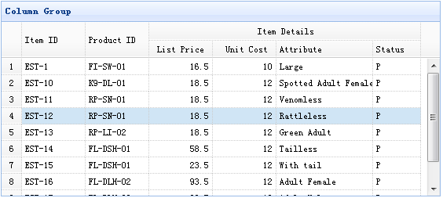
在本实例中，我们使用平面数据来填充数据网格（DataGrid）的数据，并把 listprice、unitcost、addr1、status 列组合在一个单一的列下。
为了创建列组合，您应该定义数据网格（datagrid）插件的 columns 数据。列的每个元素是定义一组可使用 rowspan 或 colspan 属性来进行组合的单元格。
下面的代码实现了上面的实例：
<table id="tt" title="Column Group" class="easyui-datagrid" style="width:550px;height:250px" url="data/datagrid_data.json" singleSelect="true" iconCls="icon-save" rownumbers="true"> <thead> <tr> <th rowspan="2" field="itemid" width="80">Item ID</th> <th rowspan="2" field="productid" width="80">Product ID</th> <th colspan="4">Item Details</th> </tr> <tr> <th field="listprice" width="80" align="right">List Price</th> <th field="unitcost" width="80" align="right">Unit Cost</th> <th field="attr1" width="100">Attribute</th> <th field="status" width="60" align="center">Stauts</th> </tr> </thead> </table>
本实例演示如何放置一个复选框列到数据网格（DataGrid）。通过复选框，用户将可以选择 选中/取消选中 网格行数据。
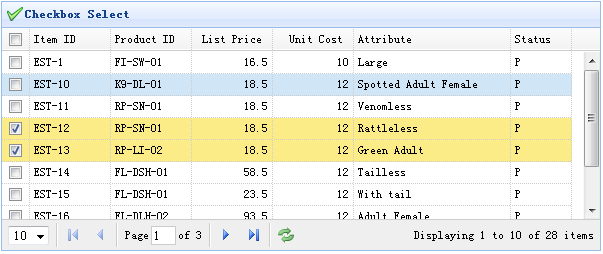
为了添加一个复选框列，我们仅仅需要添加一个列的 checkbox 属性，并设置它为 true。代码如下所示：
<table id="tt" title="Checkbox Select" class="easyui-datagrid" style="width:550px;height:250px" url="data/datagrid_data.json" idField="itemid" pagination="true" iconCls="icon-save"> <thead> <tr> <th field="ck" checkbox="true"></th> <th field="itemid" width="80">Item ID</th> <th field="productid" width="80">Product ID</th> <th field="listprice" width="80" align="right">List Price</th> <th field="unitcost" width="80" align="right">Unit Cost</th> <th field="attr1" width="100">Attribute</th> <th field="status" width="60" align="center">Status</th> </tr> </thead> </table>
以上代码添加了一个带有 checkbox 属性的列，所以它将成为复选框列。如果 idField 属性已设置，数据网格（DataGrid）的选择集合将在不同的页面保持。
数据网格（datagrid）内置一个很好特性的分页功能，自定义也相当简单。在本教程中，我们将创建一个数据网格（datagrid），并在分页工具栏上添加一些自定义按钮。
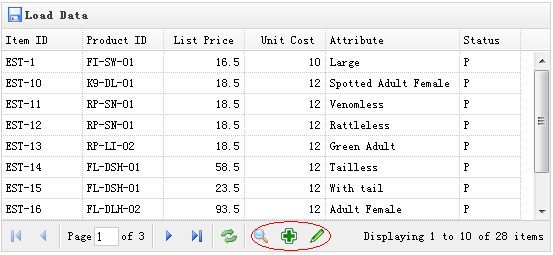
<table id="tt" title="Load Data" class="easyui-datagrid" style="width:550px;height:250px" url="data/datagrid_data.json" iconCls="icon-save" pagination="true"> <thead> <tr> <th field="itemid" width="80">Item ID</th> <th field="productid" width="80">Product ID</th> <th field="listprice" width="80" align="right">List Price</th> <th field="unitcost" width="80" align="right">Unit Cost</th> <th field="attr1" width="100">Attribute</th> <th field="status" width="60" align="center">Stauts</th> </tr> </thead> </table>
请记得，设置 'pagination' 属性为 true，这样才会生成分页工具栏。
var pager = $('#tt').datagrid('getPager'); // get the pager of datagrid
pager.pagination({
showPageList:false,
buttons:[{
iconCls:'icon-search',
handler:function(){
alert('search');
}
},{
iconCls:'icon-add',
handler:function(){
alert('add');
}
},{
iconCls:'icon-edit',
handler:function(){
alert('edit');
}
}],
onBeforeRefresh:function(){
alert('before refresh');
return true;
}
});
正如您所看到的，我们首先得到数据网格（datagrid）的 pager 对象，然后重新创建分页（pagination）。我们隐藏页面列表，并添加三个新的按钮。
可编辑的功能是最近添加到数据网格（datagrid）的。它可以使用户添加一个新行到数据网格（datagrid）。用户也可以更新一个或多个行。
本教程向您展示如何创建一个数据网格（datagrid）和内联编辑器。
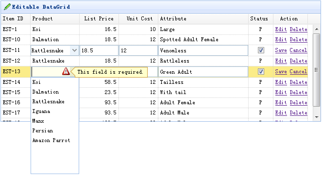
$(function(){
$('#tt').datagrid({
title:'Editable DataGrid',
iconCls:'icon-edit',
width:660,
height:250,
singleSelect:true,
idField:'itemid',
url:'datagrid_data.json',
columns:[[
{field:'itemid',title:'Item ID',width:60},
{field:'productid',title:'Product',width:100,
formatter:function(value){
for(var i=0; i<products.length; i++){
if (products[i].productid == value) return products[i].name;
}
return value;
},
editor:{
type:'combobox',
options:{
valueField:'productid',
textField:'name',
data:products,
required:true
}
}
},
{field:'listprice',title:'List Price',width:80,align:'right',editor:{type:'numberbox',options:{precision:1}}},
{field:'unitcost',title:'Unit Cost',width:80,align:'right',editor:'numberbox'},
{field:'attr1',title:'Attribute',width:150,editor:'text'},
{field:'status',title:'Status',width:50,align:'center',
editor:{
type:'checkbox',
options:{
on: 'P',
off: ''
}
}
},
{field:'action',title:'Action',width:70,align:'center',
formatter:function(value,row,index){
if (row.editing){
var s = '<a href="#" onclick="saverow(this)">Save</a> ';
var c = '<a href="#" onclick="cancelrow(this)">Cancel</a>';
return s+c;
} else {
var e = '<a href="#" onclick="editrow(this)">Edit</a> ';
var d = '<a href="#" onclick="deleterow(this)">Delete</a>';
return e+d;
}
}
}
]],
onBeforeEdit:function(index,row){
row.editing = true;
updateActions(index);
},
onAfterEdit:function(index,row){
row.editing = false;
updateActions(index);
},
onCancelEdit:function(index,row){
row.editing = false;
updateActions(index);
}
});
});
function updateActions(index){
$('#tt').datagrid('updateRow',{
index: index,
row:{}
});
}
为了启用数据网格行内编辑，您应该添加一个 editor 属性到列中。编辑器（editor）会告诉数据网格（datagrid）如何编辑字段及如何保存字段值。正如您所看到的，我们定义的三个编辑器（editor）：text、combobox 和 checkbox。
function getRowIndex(target){
var tr = $(target).closest('tr.datagrid-row');
return parseInt(tr.attr('datagrid-row-index'));
}
function editrow(target){
$('#tt').datagrid('beginEdit', getRowIndex(target));
}
function deleterow(target){
$.messager.confirm('Confirm','Are you sure?',function(r){
if (r){
$('#tt').datagrid('deleteRow', getRowIndex(target));
}
});
}
function saverow(target){
$('#tt').datagrid('endEdit', getRowIndex(target));
}
function cancelrow(target){
$('#tt').datagrid('cancelEdit', getRowIndex(target));
}
一些常见的编辑器（editor）添加到数据网格（datagrid），以便用户编辑数据。 所有的编辑器（editor）都定义在 $.fn.datagrid.defaults.editors 对象中，这个可以继承扩展以便支持新的编辑器（editor）。 本教程将向您展示如何添加一个新的 numberspinner 编辑器到数据网格（datagrid）。
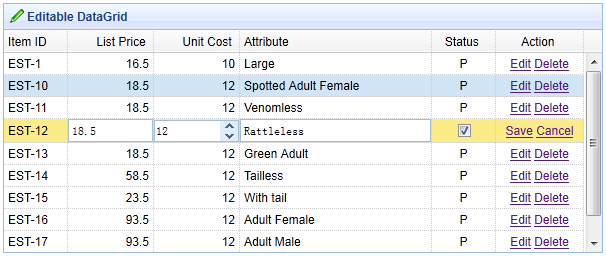
$.extend($.fn.datagrid.defaults.editors, {
numberspinner: {
init: function(container, options){
var input = $('<input type="text">').appendTo(container);
return input.numberspinner(options);
},
destroy: function(target){
$(target).numberspinner('destroy');
},
getValue: function(target){
return $(target).numberspinner('getValue');
},
setValue: function(target, value){
$(target).numberspinner('setValue',value);
},
resize: function(target, width){
$(target).numberspinner('resize',width);
}
}
});
<table id="tt" style="width:600px;height:250px"
url="data/datagrid_data.json" title="Editable DataGrid" iconCls="icon-edit"
singleSelect="true" idField="itemid" fitColumns="true">
<thead>
<tr>
<th field="itemid" width="60">Item ID</th>
<th field="listprice" width="80" align="right" editor="{type:'numberbox',options:{precision:1}}">List Price</th>
<th field="unitcost" width="80" align="right" editor="numberspinner">Unit Cost</th>
<th field="attr1" width="180" editor="text">Attribute</th>
<th field="status" width="60" align="center" editor="{type:'checkbox',options:{on:'P',off:''}}">Status</th>
<th field="action" width="80" align="center" formatter="formatAction">Action</th>
</tr>
</thead>
</table>
我们分配 numberspinner 编辑器到 'unit cost' 字段。 当开始编辑一行，用户可以通过 numberspinner 编辑器来编辑数据。
在本教程中，您将学习如何在可编辑的数据网格（datagrid）中包含一个运算的列。一个运算列通常包含一些从一个或多个其他列运算的值。
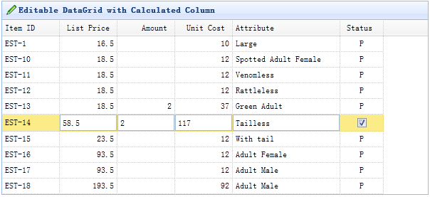
首先，创建一个可编辑的数据网格（datagrid）。这里我们创建了一些可编辑列，'listprice'、'amount' 和 'unitcost' 列定义为 numberbox 编辑类型。运算列是 'unitcost' 字段，将是 listprice 乘以 amount 列的结果。
<table id="tt" style="width:600px;height:auto"
title="Editable DataGrid with Calculated Column" iconCls="icon-edit" singleSelect="true"
idField="itemid" url="data/datagrid_data.json">
<thead>
<tr>
<th field="itemid" width="80">Item ID</th>
<th field="listprice" width="80" align="right" editor="{type:'numberbox',options:{precision:1}}">List Price</th>
<th field="amount" width="80" align="right" editor="{type:'numberbox',options:{precision:0}}">Amount</th>
<th field="unitcost" width="80" align="right" editor="numberbox">Unit Cost</th>
<th field="attr1" width="150" editor="text">Attribute</th>
<th field="status" width="60" align="center" editor="{type:'checkbox',options:{on:'P',off:''}}">Status</th>
</tr>
</thead>
</table>
当用户点击一行的时候，我们开始一个编辑动作。
var lastIndex;
$('#tt').datagrid({
onClickRow:function(rowIndex){
if (lastIndex != rowIndex){
$('#tt').datagrid('endEdit', lastIndex);
$('#tt').datagrid('beginEdit', rowIndex);
setEditing(rowIndex);
}
lastIndex = rowIndex;
}
});
为了在一些列之间创建运算关系，我们应该得到当前的 editors，并绑定一些事件到它们上面。
function setEditing(rowIndex){
var editors = $('#tt').datagrid('getEditors', rowIndex);
var priceEditor = editors[0];
var amountEditor = editors[1];
var costEditor = editors[2];
priceEditor.target.bind('change', function(){
calculate();
});
amountEditor.target.bind('change', function(){
calculate();
});
function calculate(){
var cost = priceEditor.target.val() * amountEditor.target.val();
$(costEditor.target).numberbox('setValue',cost);
}
}
数据网格（datagrid）经常需要合并一些单元格。本教程将向您展示如何在数据网格（datagrid）中合并单元格。
为了合并数据网格（datagrid）单元格，只需简单地调用 'mergeCells' 方法，并传入合并信息参数，告诉数据网格（datagrid）如何合并单元格。在所有合并的单元格中，除了第一个单元格，其它单元格在合并后被隐藏。
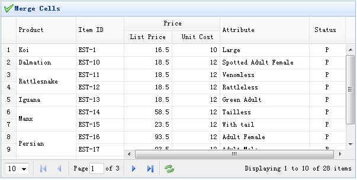
<table id="tt" title="Merge Cells" style="width:550px;height:250px" url="data/datagrid_data.json" singleSelect="true" iconCls="icon-save" rownumbers="true" idField="itemid" pagination="true"> <thead frozen="true"> <tr> <th field="productid" width="80" formatter="formatProduct">Product ID</th> <th field="itemid" width="100">Item ID</th> </tr> </thead> <thead> <tr> <th colspan="2">Price</th> <th rowspan="2" field="attr1" width="150">Attribute</th> <th rowspan="2" field="status" width="60" align="center">Stauts</th> </tr> <tr> <th field="listprice" width="80" align="right">List Price</th> <th field="unitcost" width="80" align="right">Unit Cost</th> </tr> </thead> </table>
当数据加载之后，我们合并数据网格（datagrid）中的一些单元格，所以放置下面的代码在 onLoadSuccess 回调函数中。
$('#tt').datagrid({
onLoadSuccess:function(){
var merges = [{
index:2,
rowspan:2
},{
index:5,
rowspan:2
},{
index:7,
rowspan:2
}];
for(var i=0; i<merges.length; i++)
$('#tt').datagrid('mergeCells',{
index:merges[i].index,
field:'productid',
rowspan:merges[i].rowspan
});
}
});
在不同的情况下，您可能需要为数据网格（datagrid）运用更灵活的布局。对于用户来说，卡片视图（Card View）是个不错的选择。这个工具可以在数据网格（datagrid）中迅速获取和显示数据。在数据网格（datagrid）的头部，您可以仅仅通过点击列的头部来排序数据。本教程将向您展示如何创建自定义卡片视图（Card View）。
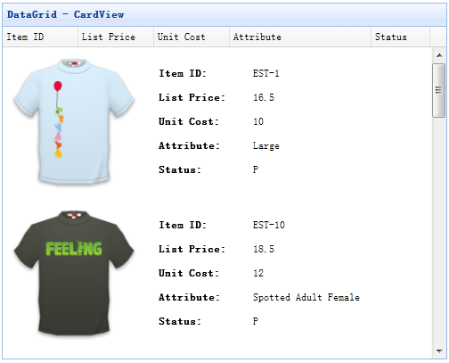
从数据网格（datagrid）的默认视图继承，是个创建自定义视图的不错方法。我们将要创建一个卡片视图（Card View）来为每行显示一些信息。
var cardview = $.extend({}, $.fn.datagrid.defaults.view, {
renderRow: function(target, fields, frozen, rowIndex, rowData){
var cc = [];
cc.push('<td colspan=' + fields.length + ' style="padding:10px 5px;border:0;">');
if (!frozen){
var aa = rowData.itemid.split('-');
var img = 'shirt' + aa[1] + '.gif';
cc.push('<img src="images/' + img + '" style="width:150px;float:left">');
cc.push('<div style="float:left;margin-left:20px;">');
for(var i=0; i<fields.length; i++){
var copts = $(target).datagrid('getColumnOption', fields[i]);
cc.push('<p><span class="c-label">' + copts.title + ':</span> ' + rowData[fields[i]] + '</p>');
}
cc.push('</div>');
}
cc.push('</td>');
return cc.join('');
}
});
现在我们使用视图创建数据网格（datagrid）。
<table id="tt" style="width:500px;height:400px" title="DataGrid - CardView" singleSelect="true" fitColumns="true" remoteSort="false" url="datagrid8_getdata.php" pagination="true" sortOrder="desc" sortName="itemid"> <thead> <tr> <th field="itemid" width="80" sortable="true">Item ID</th> <th field="listprice" width="80" sortable="true">List Price</th> <th field="unitcost" width="80" sortable="true">Unit Cost</th> <th field="attr1" width="150" sortable="true">Attribute</th> <th field="status" width="60" sortable="true">Status</th> </tr> </thead> </table>
$('#tt').datagrid({
view: cardview
});
请注意，我们设置 view 属性，且它的值为我们的卡片视图。
在本教程中，我们将向您展示如何在数据网格（datagrid）页脚显示摘要信息行。
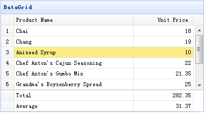
为了显示页脚行，您应该设置 showFooter 属性为 true，然后准备定义在数据网格（datagrid）数据中的页脚行。以下是示例数据：
{"total":1,"rows":[{"id":1,"name":"Chai","price":18.00}],"footer":[{"name":"Total","price":18.00}]}
<table id="tt" title="DataGrid" class="easyui-datagrid" style="width:400px;height:250px" url="data/datagrid17_data.json" fitColumns="true" rownumbers="true" showFooter="true"> <thead> <tr> <th field="name" width="80">Product Name</th> <th field="price" width="40" align="right">Unit Price</th> </tr> </thead> </table>
页脚行和显示数据行一样，所以您可以在页脚显示不止一个摘要信息。
本教程将向您展示如何根据一些条件改变数据网格（datagrid）组件的行样式。当 listprice 值大于 50 时，我们将为该行设置不同的颜色。
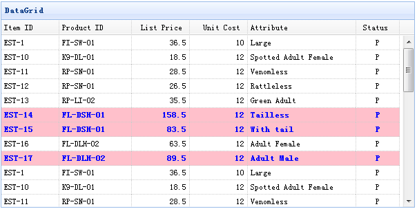
数据网格（datagrid）的 rowStyler 函数的设计目的是允许您自定义行样式。以下代码展示如何改变行样式：
<table id="tt" title="DataGrid" style="width:600px;height:250px" url="data/datagrid_data.json" singleSelect="true" fitColumns="true"> <thead> <tr> <th field="itemid" width="80">Item ID</th> <th field="productid" width="80">Product ID</th> <th field="listprice" width="80" align="right">List Price</th> <th field="unitcost" width="80" align="right">Unit Cost</th> <th field="attr1" width="150">Attribute</th> <th field="status" width="60" align="center">Stauts</th> </tr> </thead> </table>
$('#tt').datagrid({
rowStyler:function(index,row){
if (row.listprice>50){
return 'background-color:pink;color:blue;font-weight:bold;';
}
}
});
正如您所看到的，我们根据一些条件设置 background-color（背景色）为 pink（粉红色），设置文本颜色为 blue（蓝色）。
属性网格（property grid）带有一个内置的 expand（展开）/collapse（合并） 按钮，可以简单地为行分组。您可以简单地创建一个可编辑属性的分层（hierarchical）列表。
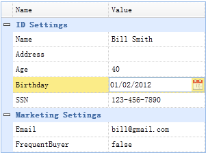
<table id="tt" class="easyui-propertygrid" style="width:300px"
url="propertygrid_data.json"
showGroup="true" scrollbarSize="0"
></table>
[
{"name":"Name","value":"Bill Smith","group":"ID Settings","editor":"text"},
{"name":"Address","value":"","group":"ID Settings","editor":"text"},
{"name":"Age","value":"40","group":"ID Settings","editor":"numberbox"},
{"name":"Birthday","value":"01/02/2012","group":"ID Settings","editor":"datebox"},
{"name":"SSN","value":"123-456-7890","group":"ID Settings","editor":"text"},
{"name":"Email","value":"bill@gmail.com","group":"Marketing Settings","editor":{
"type":"validatebox",
"options":{
"validType":"email"
}
}},
{"name":"FrequentBuyer","value":"false","group":"Marketing Settings","editor":{
"type":"checkbox",
"options":{
"on":true,
"off":false
}
}}
]
正如您所看到的，属性网格（property grid）的创建不需要任何的 javascript 代码。您可以简单地继承扩展 editor 类型。
数据网格（datagrid）可以改变它的视图（view）来显示不同的效果。使用详细视图，数据网格（datagrid）可以在数据行的左边显示展开按钮（"+" 或者 "-"）。用户可以展开行来显示附加的详细信息。
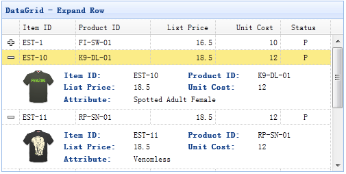
<table id="dg" style="width:500px;height:250px" url="datagrid8_getdata.php" pagination="true" sortName="itemid" sortOrder="desc" title="DataGrid - Expand Row" singleSelect="true" fitColumns="true"> <thead> <tr> <th field="itemid" width="60">Item ID</th> <th field="productid" width="80">Product ID</th> <th field="listprice" align="right" width="70">List Price</th> <th field="unitcost" align="right" width="70">Unit Cost</th> <th field="status" width="50" align="center">Status</th> </tr> </thead> </table>
为了使用详细视图，请记得在页面头部引用视图脚本文件。
<script type="text/javascript" src="http://www.w3cschool.cc/try/jeasyui/datagrid-detailview.js"></script>
$('#dg').datagrid({
view: detailview,
detailFormatter:function(index,row){
return '<div class="ddv" style="padding:5px 0"></div>';
},
onExpandRow: function(index,row){
var ddv = $(this).datagrid('getRowDetail',index).find('div.ddv');
ddv.panel({
border:false,
cache:false,
href:'datagrid21_getdetail.php?itemid='+row.itemid,
onLoad:function(){
$('#dg').datagrid('fixDetailRowHeight',index);
}
});
$('#dg').datagrid('fixDetailRowHeight',index);
}
});
我们定义 'detailFormatter' 函数，告诉数据网格（datagrid）如何渲染详细视图。 在这种情况下,我们返回一个简单的 '<div>' 元素，它将充当详细内容的容器。 请注意，详细信息为空。当用户点击展开按钮（'+'）时，onExpandRow 事件将被触发。 所以我们可以写一些代码来加载 ajax 详细内容。 最后我们调用 'fixDetailRowHeight' 方法来固定当详细内容加载时的行高度。
<?php
include_once 'conn.php';
$itemid = mysql_real_escape_string($_REQUEST['itemid']);
$rs = mysql_query("select * from item where itemid='$itemid'");
$item = mysql_fetch_array($rs);
?>
<table class="dv-table" border="0" style="width:100%;">
<tr>
<td rowspan="3" style="width:60px">
<?php
$aa = explode('-',$itemid);
$serno = $aa[1];
$img = "images/shirt$serno.gif";
echo "<img src=\"$img\" style=\"width:60px;margin-right:20px\" />";
?>
</td>
<td class="dv-label">Item ID: </td>
<td><?php echo $item['itemid'];?></td>
<td class="dv-label">Product ID:</td>
<td><?php echo $item['productid'];?></td>
</tr>
<tr>
<td class="dv-label">List Price: </td>
<td><?php echo $item['listprice'];?></td>
<td class="dv-label">Unit Cost:</td>
<td><?php echo $item['unitcost'];?></td>
</tr>
<tr>
<td class="dv-label">Attribute: </td>
<td colspan="3"><?php echo $item['attr1'];?></td>
</tr>
</table>
使用数据网格（datagrid）的详细视图，用户可以展开一行来显示附加的详细信息。 任何内容都可以加载作为行详细，子网格也可以动态加载。 本教程将向您展示如何在主网格上创建一个子网格。
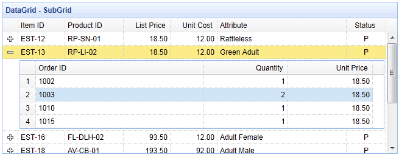
<table id="dg" style="width:700px;height:250px" url="datagrid22_getdata.php" title="DataGrid - SubGrid" singleSelect="true" fitColumns="true"> <thead> <tr> <th field="itemid" width="80">Item ID</th> <th field="productid" width="100">Product ID</th> <th field="listprice" align="right" width="80">List Price</th> <th field="unitcost" align="right" width="80">Unit Cost</th> <th field="attr1" width="220">Attribute</th> <th field="status" width="60" align="center">Status</th> </tr> </thead> </table>
为了使用详细视图，请记得在页面头部引用视图脚本文件。
<script type="text/javascript" src="http://www.w3cschool.cc/try/jeasyui/datagrid-detailview.js"></script>
$('#dg').datagrid({
view: detailview,
detailFormatter:function(index,row){
return '<div style="padding:2px"><table class="ddv"></table></div>';
},
onExpandRow: function(index,row){
var ddv = $(this).datagrid('getRowDetail',index).find('table.ddv');
ddv.datagrid({
url:'datagrid22_getdetail.php?itemid='+row.itemid,
fitColumns:true,
singleSelect:true,
rownumbers:true,
loadMsg:'',
height:'auto',
columns:[[
{field:'orderid',title:'Order ID',width:100},
{field:'quantity',title:'Quantity',width:100},
{field:'unitprice',title:'Unit Price',width:100}
]],
onResize:function(){
$('#dg').datagrid('fixDetailRowHeight',index);
},
onLoadSuccess:function(){
setTimeout(function(){
$('#dg').datagrid('fixDetailRowHeight',index);
},0);
}
});
$('#dg').datagrid('fixDetailRowHeight',index);
}
});
当用户点击展开按钮（'+'）时，'onExpandRow' 事件将被触发。 我们创建一个新的带有三列的子网格。 当子网格数据加载成功时或者改变尺寸大小时，请记得对主网格调用 'fixDetailRowHeight' 方法。
$result = array();
include 'conn.php';
$rs = mysql_query("select * from item where itemid in (select itemid from lineitem)");
$items = array();
while($row = mysql_fetch_object($rs)){
array_push($items, $row);
}
echo json_encode($items);
datagrid22_getdetail.php
include 'conn.php';
$itemid = mysql_real_escape_string($_REQUEST['itemid']);
$rs = mysql_query("select * from lineitem where itemid='$itemid'");
$items = array();
while($row = mysql_fetch_object($rs)){
array_push($items, $row);
}
echo json_encode($items);
数据网格（datagrid）的虚拟滚动特性可以用来显示大数量的记录而不需要分页。 当滚动垂直滚动条时，数据网格（datagrid）执行 ajax 请求来加载和刷新现有的记录。 整个刷新的行为过程是平稳的没有闪烁。 在本教程中，我们将创建一个数据网格（datagrid），并运用虚拟滚动特性从服务器加载数据。
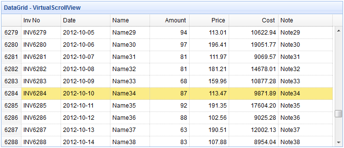
为数据网格（datagrid）运用虚拟滚动特性，'view' 属性应该设置为 'scrollview'。 用户应该从数据网格（datagrid）扩展下载 scrollview，并在页面头部引用 scrollview 文件。
<script type="text/javascript" src="https://www.runoob.com/try/jeasyui/datagrid-detailview.js"></script>
<table id="tt" class="easyui-datagrid" style="width:700px;height:300px" title="DataGrid - VirtualScrollView" data-options="view:scrollview,rownumbers:true,singleSelect:true, url:'datagrid27_getdata.php',autoRowHeight:false,pageSize:50"> <thead> <tr> <th field="inv" width="80">Inv No</th> <th field="date" width="100">Date</th> <th field="name" width="80">Name</th> <th field="amount" width="80" align="right">Amount</th> <th field="price" width="80" align="right">Price</th> <th field="cost" width="100" align="right">Cost</th> <th field="note" width="110">Note</th> </tr> </thead> </table>
请注意，这里我们不需要使用 pagination 属性，但 pageSize 属性是必需的，这样执行 ajax 请求时，数据网格（datagrid）将从服务器获取指定数量的记录。
datagrid27_getdata.php
$page = isset($_POST['page']) ? intval($_POST['page']) : 1;
$rows = isset($_POST['rows']) ? intval($_POST['rows']) : 50;
$items = array();
date_default_timezone_set('UTC');
for($i=1; $i<=$rows; $i++){
$index = $i+($page-1)*$rows;
$amount = rand(50,100);
$price = rand(10000,20000)/100;
$items[] = array(
'inv' => sprintf("INV%04d",$index),
'date' => date('Y-m-d',time()+24*3600*$i),
'name' => 'Name' . $index,
'note' => 'Note' . $index,
'amount' => $amount,
'price' => sprintf('%01.2f',$price),
'cost' => sprintf('%01.2f',$amount*$price)
);
}
$result = array();
$result['total'] = 8000;
$result['rows'] = $items;
echo json_encode($result);
本实例演示如何从服务器端加载数据，如何添加分页组件（pagination）到数据网格（datagrid）。
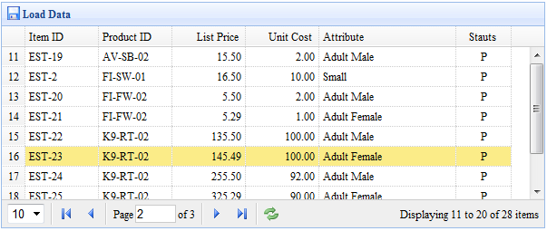
为了从远程服务器端加载数据，您应该设置 'url' 属性，在您的服务器端应该返回 JSON 格式数据。请看数据网格（datagrid）文档得到更多关于它的数据格式信息。
<table id="tt" class="easyui-datagrid" style="width:600px;height:250px" url="datagrid2_getdata.php" title="Load Data" iconCls="icon-save" rownumbers="true" pagination="true"> <thead> <tr> <th field="itemid" width="80">Item ID</th> <th field="productid" width="80">Product ID</th> <th field="listprice" width="80" align="right">List Price</th> <th field="unitcost" width="80" align="right">Unit Cost</th> <th field="attr1" width="150">Attribute</th> <th field="status" width="60" align="center">Stauts</th> </tr> </thead> </table>
我们定义数据网格（datagrid）列，并设置 'pagination' 属性为 true，它将在数据网格（datagrid）的底部生成一个分页（pagination）工具栏。pagination将发送两个参数到服务器：
$page = isset($_POST['page']) ? intval($_POST['page']) : 1;
$rows = isset($_POST['rows']) ? intval($_POST['rows']) : 10;
// ...
$rs = mysql_query("select count(*) from item");
$row = mysql_fetch_row($rs);
$result["total"] = $row[0];
$rs = mysql_query("select * from item limit $offset,$rows");
$items = array();
while($row = mysql_fetch_object($rs)){
array_push($items, $row);
}
$result["rows"] = $items;
echo json_encode($result);
创建一个窗口（window）非常简单，我们创建一个 DIV 标记：
<div id="win" class="easyui-window" title="My Window" style="width:300px;height:100px;padding:5px;"> Some Content. </div>
现在运行测试页面，您会看见一个窗口（window）显示在您的屏幕上。我们不需要写任何的 javascript 代码。
如果您希望创建一个隐藏的窗口（window），记得设置 'closed' 属性为 'true' 值，您可以调用 'open' 方法来打开窗口（window）：
<div id="win" class="easyui-window" title="My Window" closed="true" style="width:300px;height:100px;padding:5px;"> Some Content. </div>
$('#win').window('open');
作为最后的实例演示，我们创建一个登录窗口（window）：
<div id="win" class="easyui-window" title="Login" style="width:300px;height:180px;"> <form style="padding:10px 20px 10px 40px;"> <p>Name: <input type="text"></p> <p>Pass: <input type="password"></p> <div style="padding:5px;text-align:center;"> <a href="#" class="easyui-linkbutton" icon="icon-ok">Ok</a> <a href="#" class="easyui-linkbutton" icon="icon-cancel">Cancel</a> </div> </form> </div>
默认情况下，窗口（window）有四个工具：collapsible、minimizable、maximizable 和 closable。比如我们定义以下窗口（window）：
<div id="win" class="easyui-window" title="My Window" style="padding:10px;width:200px;height:100px;"> window content </div>
如需自定义工具，设置该工具为 true 或者 false。比如我们希望定义一个窗口（window），仅仅拥有一个可关闭的工具。您应该设置任何其他工具为 false。我们可以在标记中或者通过 jQuery 代码定义 tools 属性。现在我们使用 jQuery 代码来定义窗口（window）：
$('#win').window({
collapsible:false,
minimizable:false,
maximizable:false
});
如果我们希望添加自定义的工具到窗口（window），我们可以使用 tools 属性。作为实例演示，我们添加两个工具到窗口（window）：
$('#win').window({
collapsible:false,
minimizable:false,
maximizable:false,
tools:[{
iconCls:'icon-add',
handler:function(){
alert('add');
}
},{
iconCls:'icon-remove',
handler:function(){
alert('remove');
}
}]
});
Layout 组件可以内嵌在窗口（window）中。我们可以创建一个复杂的布局窗口，甚至不需要写任何的 js 代码。jquery-easyui 框架帮我们在后台做渲染和调整尺寸。
作为一个实例，我们创建一个窗口（window），它包含两个部分，一个放置在左边一个放置在右边。在窗口（window）的左边我们创建一个树形菜单（tree），在窗口（window）的右边我们创建一个 tabs 容器。
<div class="easyui-window" title="Layout Window" icon="icon-help" style="width:500px;height:250px;padding:5px;background: #fafafa;"> <div class="easyui-layout" fit="true"> <div region="west" split="true" style="width:120px;"> <ul class="easyui-tree"> <li> <span>Library</span> <ul> <li><span>easyui</span></li> <li><span>Music</span></li> <li><span>Picture</span></li> <li><span>Database</span></li> </ul> </li> </ul> </div> <div region="center" border="false" border="false"> <div class="easyui-tabs" fit="true"> <div title="Home" style="padding:10px;"> jQuery easyui framework help you build your web page easily. </div> <div title="Contacts"> No contact data. </div> </div> </div> <div region="south" border="false" style="text-align:right;height:30px;line-height:30px;"> <a class="easyui-linkbutton" icon="icon-ok" href="javascript:void(0)">Ok</a> <a class="easyui-linkbutton" icon="icon-cancel" href="javascript:void(0)">Cancel</a> </div> </div> </div>
请看上面的代码，我们仅仅使用了 HTML 标记，一个复杂的布局窗口（window）将显示。这就是 jquery-easyui 框架，简单而强大。
对话框（Dialog）是一个特殊的窗口（window），可以包含在顶部的工具栏和在底部的按钮。默认情况下，对话框（Dialog）不能改变大小，但是用户可以设置 resizable 属性为 true，使其可以改变大小。
对话框（Dialog）非常简单，可以从 DIV 标记创建，如下所示：
<div id="dd" class="easyui-dialog" style="padding:5px;width:400px;height:200px;" title="My Dialog" iconCls="icon-ok" toolbar="#dlg-toolbar" buttons="#dlg-buttons"> Dialog Content. </div>
<div id="dlg-toolbar">
<a href="#" class="easyui-linkbutton" iconCls="icon-add" plain="true" onclick="javascript:alert('Add')">Add</a>
<a href="#" class="easyui-linkbutton" iconCls="icon-save" plain="true" onclick="javascript:alert('Save')">Save</a>
</div>
<div id="dlg-buttons">
<a href="#" class="easyui-linkbutton" iconCls="icon-ok" onclick="javascript:alert('Ok')">Ok</a>
<a href="#" class="easyui-linkbutton" iconCls="icon-cancel" onclick="javascript:$('#dd').dialog('close')">Cancel</a>
</div>
上面的代码我们创建了一个带有工具栏（toolbar）和按钮（button）的对话框（dialog）。这是对话框（dialog）、工具栏（toolbar）、内容（content）和按钮（buttons）的标准配置。
您可以创建一个带有工具栏（toolbar）和按钮（button）的对话框（dialog），可以从 HTML 标记创建。这个教程描述如何添加工具栏（toolbar）和按钮（button）到对话框（dialog），没有任何的 javascript 代码。
<div id="dd" class="easyui-dialog" title="My Dialog" style="width:400px;height:200px;padding:10px" toolbar="#dlg-toolbar" buttons="#dlg-buttons"> Dialog Content. </div>
<div id="dlg-toolbar"> <table cellpadding="0" cellspacing="0" style="width:100%"> <tr> <td> <a href="#" class="easyui-linkbutton" iconCls="icon-edit" plain="true">Edit</a> <a href="#" class="easyui-linkbutton" iconCls="icon-help" plain="true">Help</a> </td> <td style="text-align:right"> <input></input><a href="#" class="easyui-linkbutton" iconCls="icon-search" plain="true"></a> </td> </tr> </table> </div>
<div id="dlg-buttons">
<table cellpadding="0" cellspacing="0" style="width:100%">
<tr>
<td>
<img src="email.gif"/>
</td>
<td style="text-align:right">
<a href="#" class="easyui-linkbutton" iconCls="icon-save" onclick="javascript:alert('save')">Save</a>
<a href="#" class="easyui-linkbutton" iconCls="icon-cancel" onclick="javascript:$('#dd').dialog('close')">Close</a>
</td>
</tr>
</table>
</div>
请注意，对话框（dialog）的工具栏（toolbar）和按钮（buttons）属性也可以通过 string 值指定，它将充当作为一个选择器去选择一个适当的 DIV 元素，并追加到工具栏（toolbar）或者按钮（buttons）的位置。
一个树形菜单（Tree）可以从标记创建。easyui 树形菜单（Tree）也可以定义在 <ul> 元素中。无序列表的 <ul> 元素提供一个基础的树（Tree）结构。每一个 <li> 元素将产生一个树节点，子 <ul> 元素将产生一个父树节点。
<ul class="easyui-tree">
<li>
<span>Folder</span>
<ul>
<li>
<span>Sub Folder 1</span>
<ul>
<li><span>File 11</span></li>
<li><span>File 12</span></li>
<li><span>File 13</span></li>
</ul>
</li>
<li><span>File 2</span></li>
<li><span>File 3</span></li>
</ul>
</li>
<li><span>File21</span></li>
</ul>
为了创建异步的树形菜单（Tree），每一个树节点必须要有一个 'id' 属性，这个将提交回服务器去检索子节点数据。
<ul id="tt" class="easyui-tree" url="tree2_getdata.php"> </ul>
$id = isset($_POST['id']) ? intval($_POST['id']) : 0;
include 'conn.php';
$result = array();
$rs = mysql_query("select * from nodes where parentId=$id");
while($row = mysql_fetch_array($rs)){
$node = array();
$node['id'] = $row['id'];
$node['text'] = $row['name'];
$node['state'] = has_child($row['id']) ? 'closed' : 'open';
array_push($result,$node);
}
echo json_encode($result);
function has_child($id){
$rs = mysql_query("select count(*) from nodes where parentId=$id");
$row = mysql_fetch_array($rs);
return $row[0] > 0 ? true : false;
}
本教程向您展示如何附加节点到树形菜单（Tree）。我们将创建一个包含水果和蔬菜节点的食品树，然后添加一些其他水果到已存在的水果节点。
首先，我们创建食品树，代码如下所示：
<div style="width:200px;height:auto;border:1px solid #ccc;"> <ul id="tt" class="easyui-tree" url="tree_data.json"></ul> </div>
请注意，树（Tree)组件是定义在 <ul> 标记中，树节点数据从 URL "tree_data.json" 加载。
然后我们通过点击节点选择水果节点，我们将添加一些其他的水果数据。执行 getSelected 方法得到处理节点：
var node = $('#tt').tree('getSelected');
getSelected 方法的返回结果是一个 javascript 对象，它有一个 id、text、target 属性。target 属性是一个 DOM 对象，引用选中节点，它的 append 方法将用于附加子节点。
var node = $('#tt').tree('getSelected');
if (node){
var nodes = [{
"id":13,
"text":"Raspberry"
},{
"id":14,
"text":"Cantaloupe"
}];
$('#tt').tree('append', {
parent:node.target,
data:nodes
});
}
当添加一些水果，您将看见：
正如您所看到的，使用 easyui 的树（Tree）插件去附加节点不是那么的难。
easyui 的树（Tree）插件允许您创建一个复选框树。如果您点击一个节点的复选框，这个点击的节点信息将向上和向下继承。例如：点击 'tomato' 节点的复选框，您将会看见 'Vegetables' 节点现在仅仅选中部分。
<ul id="tt" class="easyui-tree" url="data/tree_data.json" checkbox="true"> </ul>
当在一个应用中使用树（Tree）插件，拖拽（drag）和放置（drop）功能要求允许用户改变节点位置。启用拖拽（drag）和放置（drop）操作，所有您需要做的就是把树（Tree）插件的 'dnd' 属性设置为 true。
$('#tt').tree({
dnd: true,
url: 'tree_data.json'
});
当在一个树节点上发生放置操作，'onDrop' 事件将被触发，您应该做一些或更多的操作，例如保存节点状态到远程服务器端，等等。
onDrop: function(targetNode, source, point){
var targetId = $(target).tree('getNode', targetNode).id;
$.ajax({
url: '...',
type: 'post',
dataType: 'json',
data: {
id: source.id,
targetId: targetId,
point: point
}
});
}
通常表示一个树节点的方式就是在每一个节点存储一个 parentid。 这个也被称为邻接列表模型。 直接加载这些数据到树形菜单（Tree）是不允许的。 但是我们可以在加载树形菜单之前，把它转换为标准标准的树形菜单（Tree）数据格式。 树（Tree）插件提供一个 'loadFilter' 选项函数，它可以实现这个功能。 它提供一个机会来改变任何一个进入数据。 本教程向您展示如何使用 'loadFilter' 函数加载父/子节点到树形菜单（Tree）。
[
{"id":1,"parendId":0,"name":"Foods"},
{"id":2,"parentId":1,"name":"Fruits"},
{"id":3,"parentId":1,"name":"Vegetables"},
{"id":4,"parentId":2,"name":"apple"},
{"id":5,"parentId":2,"name":"orange"},
{"id":6,"parentId":3,"name":"tomato"},
{"id":7,"parentId":3,"name":"carrot"},
{"id":8,"parentId":3,"name":"cabbage"},
{"id":9,"parentId":3,"name":"potato"},
{"id":10,"parentId":3,"name":"lettuce"}
]
$('#tt').tree({
url: 'data/tree6_data.json',
loadFilter: function(rows){
return convert(rows);
}
});
function convert(rows){
function exists(rows, parentId){
for(var i=0; i<rows.length; i++){
if (rows[i].id == parentId) return true;
}
return false;
}
var nodes = [];
// get the top level nodes
for(var i=0; i<rows.length; i++){
var row = rows[i];
if (!exists(rows, row.parentId)){
nodes.push({
id:row.id,
text:row.name
});
}
}
var toDo = [];
for(var i=0; i<nodes.length; i++){
toDo.push(nodes[i]);
}
while(toDo.length){
var node = toDo.shift(); // the parent node
// get the children nodes
for(var i=0; i<rows.length; i++){
var row = rows[i];
if (row.parentId == node.id){
var child = {id:row.id,text:row.name};
if (node.children){
node.children.push(child);
} else {
node.children = [child];
}
toDo.push(child);
}
}
}
return nodes;
}
树形网格（TreeGrid）组件从数据网格（DataGrid）继承，但是允许在行之间存在父/子节点关系。许多属性继承至数据网格（DataGrid），可以用在树形网格（TreeGrid）中。为了使用树形网格（TreeGrid），用户必须定义 'treeField' 属性，指明哪个字段作为树节点。
本教程将向您展示如何使用树形网格（TreeGrid）组件设置一个文件夹浏览。
<table id="test" title="Folder Browser" class="easyui-treegrid" style="width:400px;height:300px" url="data/treegrid_data.json" rownumbers="true" idField="id" treeField="name"> <thead> <tr> <th field="name" width="160">Name</th> <th field="size" width="60" align="right">Size</th> <th field="date" width="100">Modified Date</th> </tr> </thead> </table>
树形网格（TreeGrid）可以展示有限空间上带有多列和复杂数据电子表格。本教程将演示如何将表格数据排列在分割的网格和多行表头中，以便组织共同的数据。
<table title="Complex TreeGrid" class="easyui-treegrid" style="width:550px;height:250px" url="data/treegrid2_data.json" rownumbers="true" showFooter="true" idField="id" treeField="region"> <thead frozen="true"> <tr> <th field="region" width="150">Region</th> </tr> </thead> <thead> <tr> <th colspan="4">2009</th> <th colspan="4">2010</th> </tr> <tr> <th field="f1" width="50" align="right">1st qrt.</th> <th field="f2" width="50" align="right">2st qrt.</th> <th field="f3" width="50" align="right">3st qrt.</th> <th field="f4" width="50" align="right">4st qrt.</th> <th field="f5" width="50" align="right">1st qrt.</th> <th field="f6" width="50" align="right">2st qrt.</th> <th field="f7" width="50" align="right">3st qrt.</th> <th field="f8" width="50" align="right">4st qrt.</th> </tr> </thead> </table>
正如您所看到的，树形网格（Treegrid）的使用和数据网格（Datagrid）一样。请使用 'frozen' 属性来定义冻结列，列的 'colspan' 和 'rowspan' 属性来定义多行表头。
动态加载树形网格有助于从服务器上加载部分的行数据，避免加载大型数据的长时间等待。本教程将向您展示如何创建带有动态加载特性的树形网格（TreeGrid）。
<table title="Products" class="easyui-treegrid" style="width:700px;height:300px" url="treegrid3_getdata.php" rownumbers="true" idField="id" treeField="name"> <thead> <tr> <th field="name" width="250">Name</th> <th field="quantity" width="100" align="right">Quantity</th> <th field="price" width="150" align="right" formatter="formatDollar">Price</th> <th field="total" width="150" align="right" formatter="formatDollar">Total</th> </tr> </thead> </table>
treegrid3_getdata.php
$id = isset($_POST['id']) ? intval($_POST['id']) : 0;
include 'conn.php';
$result = array();
$rs = mysql_query("select * from products where parentId=$id");
while($row = mysql_fetch_array($rs)){
$row['state'] = has_child($row['id']) ? 'closed' : 'open';
$row['total'] = $row['price']*$row['quantity'];
array_push($result, $row);
}
echo json_encode($result);
function has_child($id){
$rs = mysql_query("select count(*) from products where parentId=$id");
$row = mysql_fetch_array($rs);
return $row[0] > 0 ? true : false;
}
本教程展示如何向带有动态加载特性的树形网格（TreeGrid）添加分页。
启用树形网格（TreeGrid）的分页特性，必须添加 'pagination:true' 属性，这样页面加载时就会向服务器发送 'page' 和 'rows' 参数。
<table title="Products" class="easyui-treegrid" style="width:700px;height:300px"
data-options="
url: 'treegrid4_getdata.php',
rownumbers: true,
pagination: true,
pageSize: 2,
pageList: [2,10,20],
idField: 'id',
treeField: 'name',
onBeforeLoad: function(row,param){
if (!row) { // load top level rows
param.id = 0; // set id=0, indicate to load new page rows
}
}
">
<thead>
<tr>
<th field="name" width="250">Name</th>
<th field="quantity" width="100" align="right">Quantity</th>
<th field="price" width="150" align="right" formatter="formatDollar">Price</th>
<th field="total" width="150" align="right" formatter="formatDollar">Total</th>
</tr>
</thead>
</table>
treegrid4_getdata.php
$page = isset($_POST['page']) ? intval($_POST['page']) : 1;
$rows = isset($_POST['rows']) ? intval($_POST['rows']) : 10;
$offset = ($page-1)*$rows;
$id = isset($_POST['id']) ? intval($_POST['id']) : 0;
include 'conn.php';
$result = array();
if ($id == 0){
$rs = mysql_query("select count(*) from products where parentId=0");
$row = mysql_fetch_row($rs);
$result["total"] = $row[0];
$rs = mysql_query("select * from products where parentId=0 limit $offset,$rows");
$items = array();
while($row = mysql_fetch_array($rs)){
$row['state'] = has_child($row['id']) ? 'closed' : 'open';
array_push($items, $row);
}
$result["rows"] = $items;
} else {
$rs = mysql_query("select * from products where parentId=$id");
while($row = mysql_fetch_array($rs)){
$row['state'] = has_child($row['id']) ? 'closed' : 'open';
$row['total'] = $row['price']*$row['quantity'];
array_push($result, $row);
}
}
echo json_encode($result);
function has_child($id){
$rs = mysql_query("select count(*) from products where parentId=$id");
$row = mysql_fetch_array($rs);
return $row[0] > 0 ? true : false;
}
发送到服务器的参数包括：
当展开一个行节点时，'id' 值是大于 0 的。 当改变页码时，'id' 值应该被设置为 0 来放置加载子行。
有时我们已经得到充分的分层树形网格（TreeGrid）的数据。 我们还想让树形网格（TreeGrid）按层次惰性加载节点。 首先，只加载顶层节点。 然后点击节点的展开图标来加载它的子节点。 本教程展示如何创建带有惰性加载特性的树形网格（TreeGrid）。
<table id="test" title="Folder Browser" class="easyui-treegrid" style="width:700px;height:300px" data-options=" url: 'data/treegrid_data.json', method: 'get', rownumbers: true, idField: 'id', treeField: 'name', loadFilter: myLoadFilter "> <thead> <tr> <th field="name" width="220">Name</th> <th field="size" width="100" align="right">Size</th> <th field="date" width="150">Modified Date</th> </tr> </thead> </table>
为了放置加载子节点，我们需要为每个节点重命名 'children' 属性。 正如下面的代码所示，'children' 属性重命名为 'children1'。 当展开一个节点时，我们调用 'append' 方法来加载它的子节点数据。
function myLoadFilter(data,parentId){
function setData(){
var todo = [];
for(var i=0; i<data.length; i++){
todo.push(data[i]);
}
while(todo.length){
var node = todo.shift();
if (node.children){
node.state = 'closed';
node.children1 = node.children;
node.children = undefined;
todo = todo.concat(node.children1);
}
}
}
setData(data);
var tg = $(this);
var opts = tg.treegrid('options');
opts.onBeforeExpand = function(row){
if (row.children1){
tg.treegrid('append',{
parent: row[opts.idField],
data: row.children1
});
row.children1 = undefined;
tg.treegrid('expand', row[opts.idField]);
}
return row.children1 == undefined;
};
return data;
}
本教程向您展示如何通过 easyui 提交一个表单（Form）。我们创建一个带有 name、email 和 phone 字段的表单。通过使用 easyui 表单（form）插件来改变表单（form）为 ajax 表单（form）。表单（form）提交所有字段到后台服务器，服务器处理和发送一些数据返回到前端页面。我们接收返回数据，并将它显示出来。
<div style="padding:3px 2px;border-bottom:1px solid #ccc">Ajax Form</div> <form id="ff" action="form1_proc.php" method="post"> <table> <tr> <td>Name:</td> <td><input name="name" type="text"></input></td> </tr> <tr> <td>Email:</td> <td><input name="email" type="text"></input></td> </tr> <tr> <td>Phone:</td> <td><input name="phone" type="text"></input></td> </tr> <tr> <td></td> <td><input type="submit" value="Submit"></input></td> </tr> </table> </form>
$('#ff').form({
success:function(data){
$.messager.alert('Info', data, 'info');
}
});
$name = $_POST['name']; $email = $_POST['email']; $phone = $_POST['phone']; echo "Your Name: $name <br/> Your Email: $email <br/> Your Phone: $phone";
本教程将向您展示如何验证一个表单。easyui 框架提供一个 validatebox 插件来验证一个表单。在本教程中，我们将创建一个联系表单，并应用 validatebox 插件来验证表单。然后您可以根据自己的需求来调整这个表单。
让我们创建一个简单的联系表单，带有 name、email、subject 和 message 字段：
<div style="padding:3px 2px;border-bottom:1px solid #ccc">Form Validation</div> <form id="ff" method="post"> <div> <label for="name">Name:</label> <input class="easyui-validatebox" type="text" name="name" required="true"></input> </div> <div> <label for="email">Email:</label> <input class="easyui-validatebox" type="text" name="email" required="true" validType="email"></input> </div> <div> <label for="subject">Subject:</label> <input class="easyui-validatebox" type="text" name="subject" required="true"></input> </div> <div> <label for="message">Message:</label> <textarea name="message" style="height:60px;"></textarea> </div> <div> <input type="submit" value="Submit"> </div> </form>
我们添加一个样式名为 easyui-validatebox 到 input 标记，所以 input 标记将根据 validType 属性应用验证。
当用户点击表单的 submit 按钮时，如果表单是无效的，我们应该阻止表单提交。
$('#ff').form({
url:'form3_proc.php',
onSubmit:function(){
return $(this).form('validate');
},
success:function(data){
$.messager.alert('Info', data, 'info');
}
});
如果表单是无效的，将显示一个提示信息。
树形下拉框（ComboTree）是一个带有下列树形结构（Tree）的下拉框（ComboBox）。它可以作为一个表单字段进行使用，可以提交给远程服务器。
在本教程中，我们将要创建一个注册表单，带有 name、address、city 字段。city 字段是一个树形下拉框（ComboTree）字段，在里面用户可以下拉树面板（tree panel），并选择一个特定的城市。
<div id="dlg" class="easyui-dialog" style="width:500px;height:250px;padding:10px 30px;"
title="Register" buttons="#dlg-buttons">
<h2>Account Information</h2>
<form id="ff" method="post">
<table>
<tr>
<td>Name:</td>
<td><input type="text" name="name" style="width:350px;"/></td>
</tr>
<tr>
<td>Address:</td>
<td><input type="text" name="address" style="width:350px;"/></td>
</tr>
<tr>
<td>City:</td>
<td><select class="easyui-combotree" url="data/city_data.json" name="city" style="width:156px;"/></td>
</tr>
</table>
</form>
</div>
<div id="dlg-buttons">
<a href="#" class="easyui-linkbutton" iconCls="icon-ok" onclick="savereg()">Submit</a>
<a href="#" class="easyui-linkbutton" iconCls="icon-cancel" onclick="javascript:$('#dlg').dialog('close')">Cancel</a>
</div>
从上面的代码可以看到，我们为一个名为 'city' 的树形下拉框（ComboTree）字段设置了一个 url 属性，这个字段可以从远程服务器检索树形结构（Tree）数据。请注意，这个字段有一个样式名字叫 'easyui-combotree'，所以我们不需要写任何的 js 代码，树形下拉框（ComboTree）字段将自动渲染。
本教程向您展示如何创建一个简单的下拉框（Combobox），让它在下拉框中显示图片项。您可以在下拉框（combobox）上使用 formatter 函数来告诉它如何格式化每一个条目。
<input id="cc" style="width:100px" url="data/combobox_data.json" valueField="id" textField="text"> </input>
$('#cc').combobox({
formatter:function(row){
var imageFile = 'images/' + row.icon;
return '<img class="item-img" src="'+imageFile+'"/><span class="item-text">'+row.text+'</span>';
}
});
下拉数据网格（Combogrid）组件和下拉框（Combobox）组件的共同点是，除了都具有下拉面板以外，它们都是基于数据网格（Datagrid）的。 下拉数据网格（Combogrid）组件可以过滤、分页，并具有其他一些数据网格（Datagrid）的功能。 本教程向您展示如何在一个下拉数据网格（Combogrid）组件中过滤数据记录。
<input id="cg" style="width:150px">
$('#cg').combogrid({
panelWidth:500,
url: 'form5_getdata.php',
idField:'itemid',
textField:'productid',
mode:'remote',
fitColumns:true,
columns:[[
{field:'itemid',title:'Item ID',width:60},
{field:'productid',title:'Product ID',align:'right',width:80},
{field:'listprice',title:'List Price',align:'right',width:60},
{field:'unitcost',title:'Unit Cost',align:'right',width:60},
{field:'attr1',title:'Attribute',width:150},
{field:'status',title:'Stauts',align:'center',width:60}
]]
});
下拉数据网格（Combogrid）组件应该定义 'idField' 和 'textField' 属性。 'idField' 属性存储组件值，'textField' 属性在 input 文本框中显示文本消息。 下拉数据网格（Combogrid）组件可以以 'local' 或 'remote' 模式过滤记录。 在远程（remote）模式中，当用户输入字符到 input 文本框中，下拉数据网格（Combogrid）将发送 'q' 参数到远程服务器。
$q = isset($_POST['q']) ? strval($_POST['q']) : '';
include 'conn.php';
$rs = mysql_query("select * from item where itemid like '%$q%' or productid like '%$q%'");
$rows = array();
while($row = mysql_fetch_assoc($rs)){
$rows[] = $row;
}
echo json_encode($rows);
jQuery EasyUI 提供了用于创建跨浏览器网页的完整的组件集合，包括功能强大的 datagrid（数据网格）、treegrid（树形表格）、 panel（面板）、combo（下拉组合）等等。 用户可以组合使用这些组件，也可以单独使用其中一个。
easyui 的每个组件都有属性、方法和事件。用户可以很容易地对这些组件进行扩展。
属性是定义在 jQuery.fn.{plugin}.defaults。比如，dialog 的属性是定义在 jQuery.fn.dialog.defaults。
事件（回调函数）也是定义在 jQuery.fn.{plugin}.defaults。
调用方法的语法：$('selector').plugin('method', parameter);
其中：
方法是定义在 jQuery.fn.{plugin}.methods。每个方法有两个参数：jq 和 param。第一个参数 'jq' 是必需的，引用 jQuery 对象。第二个参数 'param' 引用方法传递的实际参数。比如，要扩展 dialog 组件的方法名为 'mymove' 的方法，代码如下：
$.extend($.fn.dialog.methods, {
mymove: function(jq, newposition){
return jq.each(function(){
$(this).dialog('move', newposition);
});
}
});
现在您可以调用 'mymove' 方法来移动对话框（dialog）到指定的位置：
$('#dd').dialog('mymove', {
left: 200,
top: 100
});
下载库，并在您的页面中引用 EasyUI CSS 和 JavaScript 文件。
<link rel="stylesheet" type="text/css" href="easyui/themes/default/easyui.css"> <link rel="stylesheet" type="text/css" href="easyui/themes/icon.css"> <script type="text/javascript" src="easyui/jquery-1.7.2.min.js"></script> <script type="text/javascript" src="easyui/jquery.easyui.min.js"></script>
一旦您引用了 EasyUI 必要的文件，您就可以通过标记或者使用 JavaScript 来定义一个 EasyUI 组件。比如，要顶一个带有可折叠功能的面板，您需要编写如下 HTML 代码：
<div id="p" class="easyui-panel" style="width:500px;height:200px;padding:10px;"
title="My Panel" iconCls="icon-save" collapsible="true">
The panel content
</div>
当通过标记创建组件，'data-options' 属性被用来支持自版本 1.3 以来 HTML5 兼容的属性名称。所以您可以如下重写上面的代码：
<div id="p" class="easyui-panel" style="width:500px;height:200px;padding:10px;"
title="My Panel" data-options="iconCls:'icon-save',collapsible:true">
The panel content
</div>
下面的代码演示了如何创建一个绑定 'onSelect' 事件的组合框。
<input class="easyui-combobox" name="language"
data-options="
url:'combobox_data.json',
valueField:'id',
textField:'text',
panelHeight:'auto',
onSelect:function(record){
alert(record.text)
}">